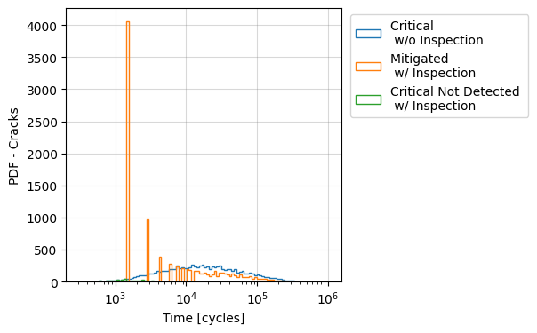
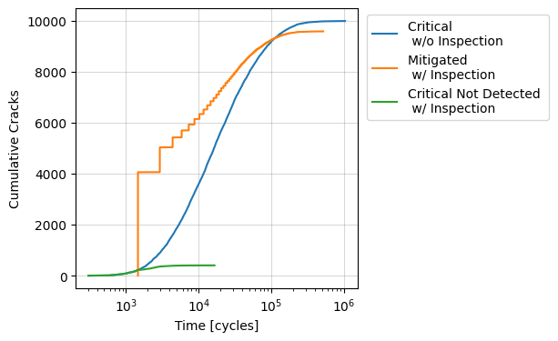
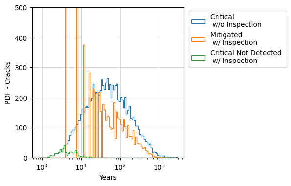
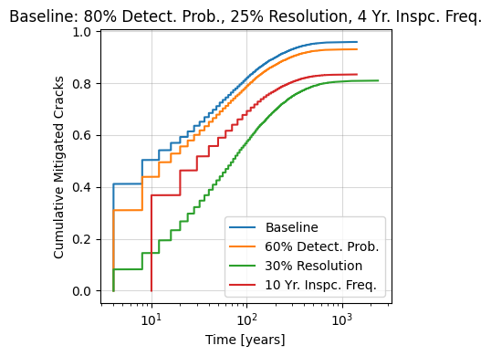
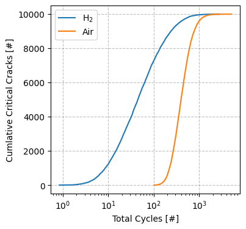
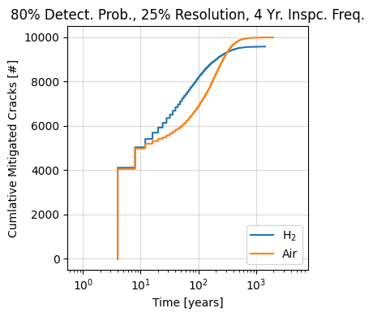

[1]:
%matplotlib inline
%load_ext autoreload
%autoreload 2
[2]:
import numpy as np
import matplotlib.pyplot as plt
from helpr.api import CrackEvolutionAnalysis
from helpr.physics.inspection_mitigation import InspectionMitigation
from helpr.utilities.unit_conversion import convert_psi_to_mpa, convert_in_to_m
from helpr.utilities.plots import plot_log_hist
from probabilistic.capabilities.uncertainty_definitions import UniformDistribution, NormalDistribution, DeterministicCharacterization
[3]:
# # turn warnings back on for general use
# import warnings
# warnings.filterwarnings('ignore')
Inspection Mitigation Analysis of Pipeline Population
Problem Specification
Geometry
[4]:
pipe_outer_diameter = DeterministicCharacterization(name='outer_diameter',
value=convert_in_to_m(36)) # 36 inch outer diameter, m
wall_thickness = DeterministicCharacterization(name='wall_thickness',
value=convert_in_to_m(0.406)) # 0.406 inch wall thickness, m
Material Properties
[5]:
yield_strength = DeterministicCharacterization(name='yield_strength',
value=convert_psi_to_mpa(52_000)) # material yield strength of 52_000 psi, MPa
fracture_resistance = DeterministicCharacterization(name='fracture_resistance',
value=55) # fracture resistance (toughness), MPa m1/2
Operating Conditions
[6]:
max_pressure = NormalDistribution(name='max_pressure',
uncertainty_type='aleatory',
nominal_value=convert_psi_to_mpa(840),
mean=convert_psi_to_mpa(850),
std_deviation=convert_psi_to_mpa(20)) # maximum pressure during oscillation, MPa
min_pressure = NormalDistribution(name='min_pressure',
uncertainty_type='aleatory',
nominal_value=convert_psi_to_mpa(638),
mean=convert_psi_to_mpa(638),
std_deviation=convert_psi_to_mpa(20)) # minimum pressure during oscillation, MPa
temperature = UniformDistribution(name='temperature',
uncertainty_type='aleatory',
nominal_value=293,
upper_bound=300,
lower_bound=285) # gas blend temperature variation, K
volume_fraction_h2 = UniformDistribution(name='volume_fraction_h2',
uncertainty_type='aleatory',
nominal_value=0.1,
upper_bound=0.2,
lower_bound=0) # % volume fraction H2 in natural gas blend, fraction
Initial Crack Dimensions
[7]:
flaw_depth = UniformDistribution(name='flaw_depth',
uncertainty_type='aleatory',
nominal_value=25,
upper_bound=30,
lower_bound=20) # population of flaw % through pipe thickness, %
flaw_length = DeterministicCharacterization(name='flaw_length',
value=convert_in_to_m(1.575)) # length of initial crack/flaw, m
Quantities of Interest (QoI)
[8]:
criteria = 'Cycles to a(crit)'
Probabilistic Settings
[9]:
sample_type = 'lhs'
sample_size = 10_000
Analysis
Using LHS sampling of uncertain variables
[10]:
analysis = CrackEvolutionAnalysis(outer_diameter=pipe_outer_diameter,
wall_thickness=wall_thickness,
flaw_depth=flaw_depth,
max_pressure=max_pressure,
min_pressure=min_pressure,
temperature=temperature,
volume_fraction_h2=volume_fraction_h2,
yield_strength=yield_strength,
fracture_resistance=fracture_resistance,
flaw_length=flaw_length,
aleatory_samples=sample_size,
sample_type=sample_type)
analysis.perform_study()
/Users/bbschro/Development/helpr/src/helpr/physics/stress_state.py:521: UserWarning: Inner Radius / wall thickness exceeds bounds 5 <= R_i/t <= 20, R_i/t = 43.33497536945812, violating Anderson solution limits.
wr.warn('Inner Radius / wall thickness exceeds bounds ' +
/Users/bbschro/Development/helpr/src/helpr/physics/stress_state.py:210: UserWarning: Stress state 73.26 > 72% SMYS
wr.warn(f'Stress state {self.percent_smys:.2f} > 72% SMYS', UserWarning)
/Users/bbschro/Development/helpr/src/helpr/physics/stress_state.py:210: UserWarning: Stress state 73.01 > 72% SMYS
wr.warn(f'Stress state {self.percent_smys:.2f} > 72% SMYS', UserWarning)
/Users/bbschro/Development/helpr/src/helpr/physics/stress_state.py:210: UserWarning: Stress state 73.70 > 72% SMYS
wr.warn(f'Stress state {self.percent_smys:.2f} > 72% SMYS', UserWarning)
/Users/bbschro/Development/helpr/src/helpr/physics/stress_state.py:210: UserWarning: Stress state 72.99 > 72% SMYS
wr.warn(f'Stress state {self.percent_smys:.2f} > 72% SMYS', UserWarning)
/Users/bbschro/Development/helpr/src/helpr/physics/stress_state.py:210: UserWarning: Stress state 72.46 > 72% SMYS
wr.warn(f'Stress state {self.percent_smys:.2f} > 72% SMYS', UserWarning)
/Users/bbschro/Development/helpr/src/helpr/physics/stress_state.py:210: UserWarning: Stress state 73.67 > 72% SMYS
wr.warn(f'Stress state {self.percent_smys:.2f} > 72% SMYS', UserWarning)
/Users/bbschro/Development/helpr/src/helpr/physics/stress_state.py:210: UserWarning: Stress state 72.49 > 72% SMYS
wr.warn(f'Stress state {self.percent_smys:.2f} > 72% SMYS', UserWarning)
/Users/bbschro/Development/helpr/src/helpr/physics/stress_state.py:210: UserWarning: Stress state 72.80 > 72% SMYS
wr.warn(f'Stress state {self.percent_smys:.2f} > 72% SMYS', UserWarning)
/Users/bbschro/Development/helpr/src/helpr/physics/stress_state.py:210: UserWarning: Stress state 72.73 > 72% SMYS
wr.warn(f'Stress state {self.percent_smys:.2f} > 72% SMYS', UserWarning)
/Users/bbschro/Development/helpr/src/helpr/physics/stress_state.py:210: UserWarning: Stress state 73.23 > 72% SMYS
wr.warn(f'Stress state {self.percent_smys:.2f} > 72% SMYS', UserWarning)
/Users/bbschro/Development/helpr/src/helpr/physics/stress_state.py:210: UserWarning: Stress state 73.93 > 72% SMYS
wr.warn(f'Stress state {self.percent_smys:.2f} > 72% SMYS', UserWarning)
/Users/bbschro/Development/helpr/src/helpr/physics/stress_state.py:210: UserWarning: Stress state 72.69 > 72% SMYS
wr.warn(f'Stress state {self.percent_smys:.2f} > 72% SMYS', UserWarning)
/Users/bbschro/Development/helpr/src/helpr/physics/stress_state.py:210: UserWarning: Stress state 73.57 > 72% SMYS
wr.warn(f'Stress state {self.percent_smys:.2f} > 72% SMYS', UserWarning)
/Users/bbschro/Development/helpr/src/helpr/physics/stress_state.py:210: UserWarning: Stress state 72.82 > 72% SMYS
wr.warn(f'Stress state {self.percent_smys:.2f} > 72% SMYS', UserWarning)
/Users/bbschro/Development/helpr/src/helpr/physics/stress_state.py:210: UserWarning: Stress state 72.40 > 72% SMYS
wr.warn(f'Stress state {self.percent_smys:.2f} > 72% SMYS', UserWarning)
/Users/bbschro/Development/helpr/src/helpr/physics/stress_state.py:210: UserWarning: Stress state 74.55 > 72% SMYS
wr.warn(f'Stress state {self.percent_smys:.2f} > 72% SMYS', UserWarning)
/Users/bbschro/Development/helpr/src/helpr/physics/stress_state.py:210: UserWarning: Stress state 73.38 > 72% SMYS
wr.warn(f'Stress state {self.percent_smys:.2f} > 72% SMYS', UserWarning)
/Users/bbschro/Development/helpr/src/helpr/physics/stress_state.py:210: UserWarning: Stress state 73.94 > 72% SMYS
wr.warn(f'Stress state {self.percent_smys:.2f} > 72% SMYS', UserWarning)
/Users/bbschro/Development/helpr/src/helpr/physics/stress_state.py:210: UserWarning: Stress state 75.03 > 72% SMYS
wr.warn(f'Stress state {self.percent_smys:.2f} > 72% SMYS', UserWarning)
/Users/bbschro/Development/helpr/src/helpr/physics/stress_state.py:210: UserWarning: Stress state 72.26 > 72% SMYS
wr.warn(f'Stress state {self.percent_smys:.2f} > 72% SMYS', UserWarning)
/Users/bbschro/Development/helpr/src/helpr/physics/stress_state.py:210: UserWarning: Stress state 74.46 > 72% SMYS
wr.warn(f'Stress state {self.percent_smys:.2f} > 72% SMYS', UserWarning)
/Users/bbschro/Development/helpr/src/helpr/physics/stress_state.py:210: UserWarning: Stress state 73.09 > 72% SMYS
wr.warn(f'Stress state {self.percent_smys:.2f} > 72% SMYS', UserWarning)
/Users/bbschro/Development/helpr/src/helpr/physics/stress_state.py:210: UserWarning: Stress state 72.18 > 72% SMYS
wr.warn(f'Stress state {self.percent_smys:.2f} > 72% SMYS', UserWarning)
/Users/bbschro/Development/helpr/src/helpr/physics/stress_state.py:210: UserWarning: Stress state 72.51 > 72% SMYS
wr.warn(f'Stress state {self.percent_smys:.2f} > 72% SMYS', UserWarning)
/Users/bbschro/Development/helpr/src/helpr/physics/stress_state.py:210: UserWarning: Stress state 73.33 > 72% SMYS
wr.warn(f'Stress state {self.percent_smys:.2f} > 72% SMYS', UserWarning)
/Users/bbschro/Development/helpr/src/helpr/physics/stress_state.py:210: UserWarning: Stress state 73.75 > 72% SMYS
wr.warn(f'Stress state {self.percent_smys:.2f} > 72% SMYS', UserWarning)
/Users/bbschro/Development/helpr/src/helpr/physics/stress_state.py:210: UserWarning: Stress state 72.41 > 72% SMYS
wr.warn(f'Stress state {self.percent_smys:.2f} > 72% SMYS', UserWarning)
/Users/bbschro/Development/helpr/src/helpr/physics/stress_state.py:210: UserWarning: Stress state 73.92 > 72% SMYS
wr.warn(f'Stress state {self.percent_smys:.2f} > 72% SMYS', UserWarning)
/Users/bbschro/Development/helpr/src/helpr/physics/stress_state.py:210: UserWarning: Stress state 72.47 > 72% SMYS
wr.warn(f'Stress state {self.percent_smys:.2f} > 72% SMYS', UserWarning)
/Users/bbschro/Development/helpr/src/helpr/physics/stress_state.py:210: UserWarning: Stress state 74.41 > 72% SMYS
wr.warn(f'Stress state {self.percent_smys:.2f} > 72% SMYS', UserWarning)
/Users/bbschro/Development/helpr/src/helpr/physics/stress_state.py:210: UserWarning: Stress state 78.00 > 72% SMYS
wr.warn(f'Stress state {self.percent_smys:.2f} > 72% SMYS', UserWarning)
/Users/bbschro/Development/helpr/src/helpr/physics/stress_state.py:210: UserWarning: Stress state 73.87 > 72% SMYS
wr.warn(f'Stress state {self.percent_smys:.2f} > 72% SMYS', UserWarning)
/Users/bbschro/Development/helpr/src/helpr/physics/stress_state.py:210: UserWarning: Stress state 73.84 > 72% SMYS
wr.warn(f'Stress state {self.percent_smys:.2f} > 72% SMYS', UserWarning)
/Users/bbschro/Development/helpr/src/helpr/physics/stress_state.py:210: UserWarning: Stress state 73.71 > 72% SMYS
wr.warn(f'Stress state {self.percent_smys:.2f} > 72% SMYS', UserWarning)
/Users/bbschro/Development/helpr/src/helpr/physics/stress_state.py:210: UserWarning: Stress state 72.01 > 72% SMYS
wr.warn(f'Stress state {self.percent_smys:.2f} > 72% SMYS', UserWarning)
/Users/bbschro/Development/helpr/src/helpr/physics/stress_state.py:210: UserWarning: Stress state 73.17 > 72% SMYS
wr.warn(f'Stress state {self.percent_smys:.2f} > 72% SMYS', UserWarning)
/Users/bbschro/Development/helpr/src/helpr/physics/stress_state.py:210: UserWarning: Stress state 73.28 > 72% SMYS
wr.warn(f'Stress state {self.percent_smys:.2f} > 72% SMYS', UserWarning)
/Users/bbschro/Development/helpr/src/helpr/physics/stress_state.py:210: UserWarning: Stress state 74.17 > 72% SMYS
wr.warn(f'Stress state {self.percent_smys:.2f} > 72% SMYS', UserWarning)
/Users/bbschro/Development/helpr/src/helpr/physics/stress_state.py:210: UserWarning: Stress state 72.28 > 72% SMYS
wr.warn(f'Stress state {self.percent_smys:.2f} > 72% SMYS', UserWarning)
/Users/bbschro/Development/helpr/src/helpr/physics/stress_state.py:210: UserWarning: Stress state 74.21 > 72% SMYS
wr.warn(f'Stress state {self.percent_smys:.2f} > 72% SMYS', UserWarning)
/Users/bbschro/Development/helpr/src/helpr/physics/stress_state.py:210: UserWarning: Stress state 73.53 > 72% SMYS
wr.warn(f'Stress state {self.percent_smys:.2f} > 72% SMYS', UserWarning)
/Users/bbschro/Development/helpr/src/helpr/physics/stress_state.py:210: UserWarning: Stress state 72.13 > 72% SMYS
wr.warn(f'Stress state {self.percent_smys:.2f} > 72% SMYS', UserWarning)
/Users/bbschro/Development/helpr/src/helpr/physics/stress_state.py:210: UserWarning: Stress state 75.73 > 72% SMYS
wr.warn(f'Stress state {self.percent_smys:.2f} > 72% SMYS', UserWarning)
/Users/bbschro/Development/helpr/src/helpr/physics/stress_state.py:210: UserWarning: Stress state 73.91 > 72% SMYS
wr.warn(f'Stress state {self.percent_smys:.2f} > 72% SMYS', UserWarning)
/Users/bbschro/Development/helpr/src/helpr/physics/stress_state.py:210: UserWarning: Stress state 72.94 > 72% SMYS
wr.warn(f'Stress state {self.percent_smys:.2f} > 72% SMYS', UserWarning)
/Users/bbschro/Development/helpr/src/helpr/physics/stress_state.py:210: UserWarning: Stress state 75.11 > 72% SMYS
wr.warn(f'Stress state {self.percent_smys:.2f} > 72% SMYS', UserWarning)
/Users/bbschro/Development/helpr/src/helpr/physics/stress_state.py:210: UserWarning: Stress state 75.72 > 72% SMYS
wr.warn(f'Stress state {self.percent_smys:.2f} > 72% SMYS', UserWarning)
/Users/bbschro/Development/helpr/src/helpr/physics/stress_state.py:210: UserWarning: Stress state 72.92 > 72% SMYS
wr.warn(f'Stress state {self.percent_smys:.2f} > 72% SMYS', UserWarning)
/Users/bbschro/Development/helpr/src/helpr/physics/stress_state.py:210: UserWarning: Stress state 73.21 > 72% SMYS
wr.warn(f'Stress state {self.percent_smys:.2f} > 72% SMYS', UserWarning)
/Users/bbschro/Development/helpr/src/helpr/physics/stress_state.py:210: UserWarning: Stress state 73.20 > 72% SMYS
wr.warn(f'Stress state {self.percent_smys:.2f} > 72% SMYS', UserWarning)
/Users/bbschro/Development/helpr/src/helpr/physics/stress_state.py:210: UserWarning: Stress state 74.95 > 72% SMYS
wr.warn(f'Stress state {self.percent_smys:.2f} > 72% SMYS', UserWarning)
/Users/bbschro/Development/helpr/src/helpr/physics/stress_state.py:210: UserWarning: Stress state 73.02 > 72% SMYS
wr.warn(f'Stress state {self.percent_smys:.2f} > 72% SMYS', UserWarning)
/Users/bbschro/Development/helpr/src/helpr/physics/stress_state.py:210: UserWarning: Stress state 73.85 > 72% SMYS
wr.warn(f'Stress state {self.percent_smys:.2f} > 72% SMYS', UserWarning)
/Users/bbschro/Development/helpr/src/helpr/physics/stress_state.py:210: UserWarning: Stress state 73.03 > 72% SMYS
wr.warn(f'Stress state {self.percent_smys:.2f} > 72% SMYS', UserWarning)
/Users/bbschro/Development/helpr/src/helpr/physics/stress_state.py:210: UserWarning: Stress state 72.10 > 72% SMYS
wr.warn(f'Stress state {self.percent_smys:.2f} > 72% SMYS', UserWarning)
/Users/bbschro/Development/helpr/src/helpr/physics/stress_state.py:210: UserWarning: Stress state 72.12 > 72% SMYS
wr.warn(f'Stress state {self.percent_smys:.2f} > 72% SMYS', UserWarning)
/Users/bbschro/Development/helpr/src/helpr/physics/stress_state.py:210: UserWarning: Stress state 74.38 > 72% SMYS
wr.warn(f'Stress state {self.percent_smys:.2f} > 72% SMYS', UserWarning)
/Users/bbschro/Development/helpr/src/helpr/physics/stress_state.py:210: UserWarning: Stress state 74.01 > 72% SMYS
wr.warn(f'Stress state {self.percent_smys:.2f} > 72% SMYS', UserWarning)
/Users/bbschro/Development/helpr/src/helpr/physics/stress_state.py:210: UserWarning: Stress state 75.21 > 72% SMYS
wr.warn(f'Stress state {self.percent_smys:.2f} > 72% SMYS', UserWarning)
/Users/bbschro/Development/helpr/src/helpr/physics/stress_state.py:210: UserWarning: Stress state 74.48 > 72% SMYS
wr.warn(f'Stress state {self.percent_smys:.2f} > 72% SMYS', UserWarning)
/Users/bbschro/Development/helpr/src/helpr/physics/stress_state.py:210: UserWarning: Stress state 72.16 > 72% SMYS
wr.warn(f'Stress state {self.percent_smys:.2f} > 72% SMYS', UserWarning)
/Users/bbschro/Development/helpr/src/helpr/physics/stress_state.py:210: UserWarning: Stress state 73.99 > 72% SMYS
wr.warn(f'Stress state {self.percent_smys:.2f} > 72% SMYS', UserWarning)
/Users/bbschro/Development/helpr/src/helpr/physics/stress_state.py:210: UserWarning: Stress state 72.45 > 72% SMYS
wr.warn(f'Stress state {self.percent_smys:.2f} > 72% SMYS', UserWarning)
/Users/bbschro/Development/helpr/src/helpr/physics/stress_state.py:210: UserWarning: Stress state 72.03 > 72% SMYS
wr.warn(f'Stress state {self.percent_smys:.2f} > 72% SMYS', UserWarning)
/Users/bbschro/Development/helpr/src/helpr/physics/stress_state.py:210: UserWarning: Stress state 72.87 > 72% SMYS
wr.warn(f'Stress state {self.percent_smys:.2f} > 72% SMYS', UserWarning)
/Users/bbschro/Development/helpr/src/helpr/physics/stress_state.py:210: UserWarning: Stress state 75.07 > 72% SMYS
wr.warn(f'Stress state {self.percent_smys:.2f} > 72% SMYS', UserWarning)
/Users/bbschro/Development/helpr/src/helpr/physics/stress_state.py:210: UserWarning: Stress state 75.37 > 72% SMYS
wr.warn(f'Stress state {self.percent_smys:.2f} > 72% SMYS', UserWarning)
/Users/bbschro/Development/helpr/src/helpr/physics/stress_state.py:210: UserWarning: Stress state 74.02 > 72% SMYS
wr.warn(f'Stress state {self.percent_smys:.2f} > 72% SMYS', UserWarning)
/Users/bbschro/Development/helpr/src/helpr/physics/stress_state.py:210: UserWarning: Stress state 74.49 > 72% SMYS
wr.warn(f'Stress state {self.percent_smys:.2f} > 72% SMYS', UserWarning)
/Users/bbschro/Development/helpr/src/helpr/physics/stress_state.py:210: UserWarning: Stress state 72.57 > 72% SMYS
wr.warn(f'Stress state {self.percent_smys:.2f} > 72% SMYS', UserWarning)
/Users/bbschro/Development/helpr/src/helpr/physics/stress_state.py:210: UserWarning: Stress state 75.25 > 72% SMYS
wr.warn(f'Stress state {self.percent_smys:.2f} > 72% SMYS', UserWarning)
/Users/bbschro/Development/helpr/src/helpr/physics/stress_state.py:210: UserWarning: Stress state 72.83 > 72% SMYS
wr.warn(f'Stress state {self.percent_smys:.2f} > 72% SMYS', UserWarning)
/Users/bbschro/Development/helpr/src/helpr/physics/stress_state.py:210: UserWarning: Stress state 72.52 > 72% SMYS
wr.warn(f'Stress state {self.percent_smys:.2f} > 72% SMYS', UserWarning)
/Users/bbschro/Development/helpr/src/helpr/physics/stress_state.py:210: UserWarning: Stress state 72.58 > 72% SMYS
wr.warn(f'Stress state {self.percent_smys:.2f} > 72% SMYS', UserWarning)
/Users/bbschro/Development/helpr/src/helpr/physics/stress_state.py:210: UserWarning: Stress state 72.09 > 72% SMYS
wr.warn(f'Stress state {self.percent_smys:.2f} > 72% SMYS', UserWarning)
/Users/bbschro/Development/helpr/src/helpr/physics/stress_state.py:210: UserWarning: Stress state 72.56 > 72% SMYS
wr.warn(f'Stress state {self.percent_smys:.2f} > 72% SMYS', UserWarning)
/Users/bbschro/Development/helpr/src/helpr/physics/stress_state.py:210: UserWarning: Stress state 73.29 > 72% SMYS
wr.warn(f'Stress state {self.percent_smys:.2f} > 72% SMYS', UserWarning)
/Users/bbschro/Development/helpr/src/helpr/physics/stress_state.py:210: UserWarning: Stress state 73.48 > 72% SMYS
wr.warn(f'Stress state {self.percent_smys:.2f} > 72% SMYS', UserWarning)
/Users/bbschro/Development/helpr/src/helpr/physics/stress_state.py:210: UserWarning: Stress state 72.36 > 72% SMYS
wr.warn(f'Stress state {self.percent_smys:.2f} > 72% SMYS', UserWarning)
/Users/bbschro/Development/helpr/src/helpr/physics/stress_state.py:210: UserWarning: Stress state 74.08 > 72% SMYS
wr.warn(f'Stress state {self.percent_smys:.2f} > 72% SMYS', UserWarning)
/Users/bbschro/Development/helpr/src/helpr/physics/stress_state.py:210: UserWarning: Stress state 75.08 > 72% SMYS
wr.warn(f'Stress state {self.percent_smys:.2f} > 72% SMYS', UserWarning)
/Users/bbschro/Development/helpr/src/helpr/physics/stress_state.py:210: UserWarning: Stress state 72.22 > 72% SMYS
wr.warn(f'Stress state {self.percent_smys:.2f} > 72% SMYS', UserWarning)
/Users/bbschro/Development/helpr/src/helpr/physics/stress_state.py:210: UserWarning: Stress state 72.21 > 72% SMYS
wr.warn(f'Stress state {self.percent_smys:.2f} > 72% SMYS', UserWarning)
/Users/bbschro/Development/helpr/src/helpr/physics/stress_state.py:210: UserWarning: Stress state 72.89 > 72% SMYS
wr.warn(f'Stress state {self.percent_smys:.2f} > 72% SMYS', UserWarning)
/Users/bbschro/Development/helpr/src/helpr/physics/stress_state.py:210: UserWarning: Stress state 72.68 > 72% SMYS
wr.warn(f'Stress state {self.percent_smys:.2f} > 72% SMYS', UserWarning)
/Users/bbschro/Development/helpr/src/helpr/physics/stress_state.py:210: UserWarning: Stress state 74.66 > 72% SMYS
wr.warn(f'Stress state {self.percent_smys:.2f} > 72% SMYS', UserWarning)
/Users/bbschro/Development/helpr/src/helpr/physics/stress_state.py:210: UserWarning: Stress state 72.77 > 72% SMYS
wr.warn(f'Stress state {self.percent_smys:.2f} > 72% SMYS', UserWarning)
/Users/bbschro/Development/helpr/src/helpr/physics/stress_state.py:210: UserWarning: Stress state 73.18 > 72% SMYS
wr.warn(f'Stress state {self.percent_smys:.2f} > 72% SMYS', UserWarning)
/Users/bbschro/Development/helpr/src/helpr/physics/stress_state.py:210: UserWarning: Stress state 75.29 > 72% SMYS
wr.warn(f'Stress state {self.percent_smys:.2f} > 72% SMYS', UserWarning)
/Users/bbschro/Development/helpr/src/helpr/physics/stress_state.py:210: UserWarning: Stress state 76.41 > 72% SMYS
wr.warn(f'Stress state {self.percent_smys:.2f} > 72% SMYS', UserWarning)
/Users/bbschro/Development/helpr/src/helpr/physics/stress_state.py:210: UserWarning: Stress state 74.67 > 72% SMYS
wr.warn(f'Stress state {self.percent_smys:.2f} > 72% SMYS', UserWarning)
/Users/bbschro/Development/helpr/src/helpr/physics/stress_state.py:210: UserWarning: Stress state 72.20 > 72% SMYS
wr.warn(f'Stress state {self.percent_smys:.2f} > 72% SMYS', UserWarning)
/Users/bbschro/Development/helpr/src/helpr/physics/stress_state.py:210: UserWarning: Stress state 72.29 > 72% SMYS
wr.warn(f'Stress state {self.percent_smys:.2f} > 72% SMYS', UserWarning)
/Users/bbschro/Development/helpr/src/helpr/physics/stress_state.py:210: UserWarning: Stress state 72.93 > 72% SMYS
wr.warn(f'Stress state {self.percent_smys:.2f} > 72% SMYS', UserWarning)
/Users/bbschro/Development/helpr/src/helpr/physics/stress_state.py:210: UserWarning: Stress state 75.30 > 72% SMYS
wr.warn(f'Stress state {self.percent_smys:.2f} > 72% SMYS', UserWarning)
/Users/bbschro/Development/helpr/src/helpr/physics/stress_state.py:210: UserWarning: Stress state 73.50 > 72% SMYS
wr.warn(f'Stress state {self.percent_smys:.2f} > 72% SMYS', UserWarning)
/Users/bbschro/Development/helpr/src/helpr/physics/stress_state.py:210: UserWarning: Stress state 73.36 > 72% SMYS
wr.warn(f'Stress state {self.percent_smys:.2f} > 72% SMYS', UserWarning)
/Users/bbschro/Development/helpr/src/helpr/physics/stress_state.py:210: UserWarning: Stress state 73.72 > 72% SMYS
wr.warn(f'Stress state {self.percent_smys:.2f} > 72% SMYS', UserWarning)
/Users/bbschro/Development/helpr/src/helpr/physics/stress_state.py:210: UserWarning: Stress state 73.24 > 72% SMYS
wr.warn(f'Stress state {self.percent_smys:.2f} > 72% SMYS', UserWarning)
/Users/bbschro/Development/helpr/src/helpr/physics/stress_state.py:210: UserWarning: Stress state 72.05 > 72% SMYS
wr.warn(f'Stress state {self.percent_smys:.2f} > 72% SMYS', UserWarning)
/Users/bbschro/Development/helpr/src/helpr/physics/stress_state.py:210: UserWarning: Stress state 72.72 > 72% SMYS
wr.warn(f'Stress state {self.percent_smys:.2f} > 72% SMYS', UserWarning)
/Users/bbschro/Development/helpr/src/helpr/physics/stress_state.py:210: UserWarning: Stress state 75.22 > 72% SMYS
wr.warn(f'Stress state {self.percent_smys:.2f} > 72% SMYS', UserWarning)
/Users/bbschro/Development/helpr/src/helpr/physics/stress_state.py:210: UserWarning: Stress state 74.22 > 72% SMYS
wr.warn(f'Stress state {self.percent_smys:.2f} > 72% SMYS', UserWarning)
/Users/bbschro/Development/helpr/src/helpr/physics/stress_state.py:210: UserWarning: Stress state 73.06 > 72% SMYS
wr.warn(f'Stress state {self.percent_smys:.2f} > 72% SMYS', UserWarning)
/Users/bbschro/Development/helpr/src/helpr/physics/stress_state.py:210: UserWarning: Stress state 73.45 > 72% SMYS
wr.warn(f'Stress state {self.percent_smys:.2f} > 72% SMYS', UserWarning)
/Users/bbschro/Development/helpr/src/helpr/physics/stress_state.py:210: UserWarning: Stress state 73.43 > 72% SMYS
wr.warn(f'Stress state {self.percent_smys:.2f} > 72% SMYS', UserWarning)
/Users/bbschro/Development/helpr/src/helpr/physics/stress_state.py:210: UserWarning: Stress state 74.87 > 72% SMYS
wr.warn(f'Stress state {self.percent_smys:.2f} > 72% SMYS', UserWarning)
/Users/bbschro/Development/helpr/src/helpr/physics/stress_state.py:210: UserWarning: Stress state 74.54 > 72% SMYS
wr.warn(f'Stress state {self.percent_smys:.2f} > 72% SMYS', UserWarning)
/Users/bbschro/Development/helpr/src/helpr/physics/stress_state.py:210: UserWarning: Stress state 75.57 > 72% SMYS
wr.warn(f'Stress state {self.percent_smys:.2f} > 72% SMYS', UserWarning)
/Users/bbschro/Development/helpr/src/helpr/physics/stress_state.py:210: UserWarning: Stress state 73.37 > 72% SMYS
wr.warn(f'Stress state {self.percent_smys:.2f} > 72% SMYS', UserWarning)
/Users/bbschro/Development/helpr/src/helpr/physics/stress_state.py:210: UserWarning: Stress state 74.68 > 72% SMYS
wr.warn(f'Stress state {self.percent_smys:.2f} > 72% SMYS', UserWarning)
/Users/bbschro/Development/helpr/src/helpr/physics/stress_state.py:210: UserWarning: Stress state 72.63 > 72% SMYS
wr.warn(f'Stress state {self.percent_smys:.2f} > 72% SMYS', UserWarning)
/Users/bbschro/Development/helpr/src/helpr/physics/stress_state.py:210: UserWarning: Stress state 72.24 > 72% SMYS
wr.warn(f'Stress state {self.percent_smys:.2f} > 72% SMYS', UserWarning)
/Users/bbschro/Development/helpr/src/helpr/physics/stress_state.py:210: UserWarning: Stress state 75.65 > 72% SMYS
wr.warn(f'Stress state {self.percent_smys:.2f} > 72% SMYS', UserWarning)
/Users/bbschro/Development/helpr/src/helpr/physics/stress_state.py:210: UserWarning: Stress state 74.04 > 72% SMYS
wr.warn(f'Stress state {self.percent_smys:.2f} > 72% SMYS', UserWarning)
/Users/bbschro/Development/helpr/src/helpr/physics/stress_state.py:210: UserWarning: Stress state 73.95 > 72% SMYS
wr.warn(f'Stress state {self.percent_smys:.2f} > 72% SMYS', UserWarning)
/Users/bbschro/Development/helpr/src/helpr/physics/stress_state.py:210: UserWarning: Stress state 73.64 > 72% SMYS
wr.warn(f'Stress state {self.percent_smys:.2f} > 72% SMYS', UserWarning)
/Users/bbschro/Development/helpr/src/helpr/physics/stress_state.py:210: UserWarning: Stress state 74.19 > 72% SMYS
wr.warn(f'Stress state {self.percent_smys:.2f} > 72% SMYS', UserWarning)
/Users/bbschro/Development/helpr/src/helpr/physics/stress_state.py:210: UserWarning: Stress state 73.55 > 72% SMYS
wr.warn(f'Stress state {self.percent_smys:.2f} > 72% SMYS', UserWarning)
/Users/bbschro/Development/helpr/src/helpr/physics/stress_state.py:210: UserWarning: Stress state 75.01 > 72% SMYS
wr.warn(f'Stress state {self.percent_smys:.2f} > 72% SMYS', UserWarning)
/Users/bbschro/Development/helpr/src/helpr/physics/stress_state.py:210: UserWarning: Stress state 73.76 > 72% SMYS
wr.warn(f'Stress state {self.percent_smys:.2f} > 72% SMYS', UserWarning)
/Users/bbschro/Development/helpr/src/helpr/physics/stress_state.py:210: UserWarning: Stress state 75.53 > 72% SMYS
wr.warn(f'Stress state {self.percent_smys:.2f} > 72% SMYS', UserWarning)
/Users/bbschro/Development/helpr/src/helpr/physics/stress_state.py:210: UserWarning: Stress state 74.94 > 72% SMYS
wr.warn(f'Stress state {self.percent_smys:.2f} > 72% SMYS', UserWarning)
/Users/bbschro/Development/helpr/src/helpr/physics/stress_state.py:210: UserWarning: Stress state 72.84 > 72% SMYS
wr.warn(f'Stress state {self.percent_smys:.2f} > 72% SMYS', UserWarning)
/Users/bbschro/Development/helpr/src/helpr/physics/stress_state.py:210: UserWarning: Stress state 73.52 > 72% SMYS
wr.warn(f'Stress state {self.percent_smys:.2f} > 72% SMYS', UserWarning)
/Users/bbschro/Development/helpr/src/helpr/physics/stress_state.py:210: UserWarning: Stress state 75.52 > 72% SMYS
wr.warn(f'Stress state {self.percent_smys:.2f} > 72% SMYS', UserWarning)
/Users/bbschro/Development/helpr/src/helpr/physics/stress_state.py:210: UserWarning: Stress state 72.43 > 72% SMYS
wr.warn(f'Stress state {self.percent_smys:.2f} > 72% SMYS', UserWarning)
/Users/bbschro/Development/helpr/src/helpr/physics/stress_state.py:210: UserWarning: Stress state 75.35 > 72% SMYS
wr.warn(f'Stress state {self.percent_smys:.2f} > 72% SMYS', UserWarning)
/Users/bbschro/Development/helpr/src/helpr/physics/stress_state.py:210: UserWarning: Stress state 76.67 > 72% SMYS
wr.warn(f'Stress state {self.percent_smys:.2f} > 72% SMYS', UserWarning)
/Users/bbschro/Development/helpr/src/helpr/physics/stress_state.py:210: UserWarning: Stress state 73.19 > 72% SMYS
wr.warn(f'Stress state {self.percent_smys:.2f} > 72% SMYS', UserWarning)
/Users/bbschro/Development/helpr/src/helpr/physics/stress_state.py:210: UserWarning: Stress state 73.97 > 72% SMYS
wr.warn(f'Stress state {self.percent_smys:.2f} > 72% SMYS', UserWarning)
/Users/bbschro/Development/helpr/src/helpr/physics/stress_state.py:210: UserWarning: Stress state 75.17 > 72% SMYS
wr.warn(f'Stress state {self.percent_smys:.2f} > 72% SMYS', UserWarning)
/Users/bbschro/Development/helpr/src/helpr/physics/stress_state.py:210: UserWarning: Stress state 74.96 > 72% SMYS
wr.warn(f'Stress state {self.percent_smys:.2f} > 72% SMYS', UserWarning)
/Users/bbschro/Development/helpr/src/helpr/physics/stress_state.py:210: UserWarning: Stress state 73.05 > 72% SMYS
wr.warn(f'Stress state {self.percent_smys:.2f} > 72% SMYS', UserWarning)
/Users/bbschro/Development/helpr/src/helpr/physics/stress_state.py:210: UserWarning: Stress state 75.55 > 72% SMYS
wr.warn(f'Stress state {self.percent_smys:.2f} > 72% SMYS', UserWarning)
/Users/bbschro/Development/helpr/src/helpr/physics/stress_state.py:210: UserWarning: Stress state 73.40 > 72% SMYS
wr.warn(f'Stress state {self.percent_smys:.2f} > 72% SMYS', UserWarning)
/Users/bbschro/Development/helpr/src/helpr/physics/stress_state.py:210: UserWarning: Stress state 76.83 > 72% SMYS
wr.warn(f'Stress state {self.percent_smys:.2f} > 72% SMYS', UserWarning)
/Users/bbschro/Development/helpr/src/helpr/physics/stress_state.py:210: UserWarning: Stress state 74.57 > 72% SMYS
wr.warn(f'Stress state {self.percent_smys:.2f} > 72% SMYS', UserWarning)
/Users/bbschro/Development/helpr/src/helpr/physics/stress_state.py:210: UserWarning: Stress state 72.42 > 72% SMYS
wr.warn(f'Stress state {self.percent_smys:.2f} > 72% SMYS', UserWarning)
/Users/bbschro/Development/helpr/src/helpr/physics/stress_state.py:210: UserWarning: Stress state 72.11 > 72% SMYS
wr.warn(f'Stress state {self.percent_smys:.2f} > 72% SMYS', UserWarning)
/Users/bbschro/Development/helpr/src/helpr/physics/stress_state.py:210: UserWarning: Stress state 75.62 > 72% SMYS
wr.warn(f'Stress state {self.percent_smys:.2f} > 72% SMYS', UserWarning)
/Users/bbschro/Development/helpr/src/helpr/physics/stress_state.py:210: UserWarning: Stress state 72.48 > 72% SMYS
wr.warn(f'Stress state {self.percent_smys:.2f} > 72% SMYS', UserWarning)
/Users/bbschro/Development/helpr/src/helpr/physics/stress_state.py:210: UserWarning: Stress state 73.08 > 72% SMYS
wr.warn(f'Stress state {self.percent_smys:.2f} > 72% SMYS', UserWarning)
/Users/bbschro/Development/helpr/src/helpr/physics/stress_state.py:210: UserWarning: Stress state 73.04 > 72% SMYS
wr.warn(f'Stress state {self.percent_smys:.2f} > 72% SMYS', UserWarning)
/Users/bbschro/Development/helpr/src/helpr/physics/stress_state.py:210: UserWarning: Stress state 74.56 > 72% SMYS
wr.warn(f'Stress state {self.percent_smys:.2f} > 72% SMYS', UserWarning)
/Users/bbschro/Development/helpr/src/helpr/physics/stress_state.py:210: UserWarning: Stress state 73.47 > 72% SMYS
wr.warn(f'Stress state {self.percent_smys:.2f} > 72% SMYS', UserWarning)
/Users/bbschro/Development/helpr/src/helpr/physics/stress_state.py:210: UserWarning: Stress state 73.98 > 72% SMYS
wr.warn(f'Stress state {self.percent_smys:.2f} > 72% SMYS', UserWarning)
/Users/bbschro/Development/helpr/src/helpr/physics/stress_state.py:210: UserWarning: Stress state 75.49 > 72% SMYS
wr.warn(f'Stress state {self.percent_smys:.2f} > 72% SMYS', UserWarning)
/Users/bbschro/Development/helpr/src/helpr/physics/stress_state.py:210: UserWarning: Stress state 77.87 > 72% SMYS
wr.warn(f'Stress state {self.percent_smys:.2f} > 72% SMYS', UserWarning)
/Users/bbschro/Development/helpr/src/helpr/physics/stress_state.py:210: UserWarning: Stress state 72.32 > 72% SMYS
wr.warn(f'Stress state {self.percent_smys:.2f} > 72% SMYS', UserWarning)
/Users/bbschro/Development/helpr/src/helpr/physics/stress_state.py:210: UserWarning: Stress state 72.38 > 72% SMYS
wr.warn(f'Stress state {self.percent_smys:.2f} > 72% SMYS', UserWarning)
/Users/bbschro/Development/helpr/src/helpr/physics/stress_state.py:210: UserWarning: Stress state 74.65 > 72% SMYS
wr.warn(f'Stress state {self.percent_smys:.2f} > 72% SMYS', UserWarning)
/Users/bbschro/Development/helpr/src/helpr/physics/stress_state.py:210: UserWarning: Stress state 73.62 > 72% SMYS
wr.warn(f'Stress state {self.percent_smys:.2f} > 72% SMYS', UserWarning)
/Users/bbschro/Development/helpr/src/helpr/physics/stress_state.py:210: UserWarning: Stress state 74.03 > 72% SMYS
wr.warn(f'Stress state {self.percent_smys:.2f} > 72% SMYS', UserWarning)
/Users/bbschro/Development/helpr/src/helpr/physics/stress_state.py:210: UserWarning: Stress state 75.24 > 72% SMYS
wr.warn(f'Stress state {self.percent_smys:.2f} > 72% SMYS', UserWarning)
/Users/bbschro/Development/helpr/src/helpr/physics/stress_state.py:210: UserWarning: Stress state 74.86 > 72% SMYS
wr.warn(f'Stress state {self.percent_smys:.2f} > 72% SMYS', UserWarning)
/Users/bbschro/Development/helpr/src/helpr/physics/stress_state.py:210: UserWarning: Stress state 74.70 > 72% SMYS
wr.warn(f'Stress state {self.percent_smys:.2f} > 72% SMYS', UserWarning)
/Users/bbschro/Development/helpr/src/helpr/physics/stress_state.py:210: UserWarning: Stress state 73.59 > 72% SMYS
wr.warn(f'Stress state {self.percent_smys:.2f} > 72% SMYS', UserWarning)
/Users/bbschro/Development/helpr/src/helpr/physics/stress_state.py:210: UserWarning: Stress state 72.66 > 72% SMYS
wr.warn(f'Stress state {self.percent_smys:.2f} > 72% SMYS', UserWarning)
/Users/bbschro/Development/helpr/src/helpr/physics/stress_state.py:210: UserWarning: Stress state 74.27 > 72% SMYS
wr.warn(f'Stress state {self.percent_smys:.2f} > 72% SMYS', UserWarning)
/Users/bbschro/Development/helpr/src/helpr/physics/stress_state.py:210: UserWarning: Stress state 74.75 > 72% SMYS
wr.warn(f'Stress state {self.percent_smys:.2f} > 72% SMYS', UserWarning)
/Users/bbschro/Development/helpr/src/helpr/physics/stress_state.py:210: UserWarning: Stress state 74.20 > 72% SMYS
wr.warn(f'Stress state {self.percent_smys:.2f} > 72% SMYS', UserWarning)
/Users/bbschro/Development/helpr/src/helpr/physics/stress_state.py:210: UserWarning: Stress state 73.82 > 72% SMYS
wr.warn(f'Stress state {self.percent_smys:.2f} > 72% SMYS', UserWarning)
/Users/bbschro/Development/helpr/src/helpr/physics/stress_state.py:210: UserWarning: Stress state 78.61 > 72% SMYS
wr.warn(f'Stress state {self.percent_smys:.2f} > 72% SMYS', UserWarning)
/Users/bbschro/Development/helpr/src/helpr/physics/stress_state.py:210: UserWarning: Stress state 76.05 > 72% SMYS
wr.warn(f'Stress state {self.percent_smys:.2f} > 72% SMYS', UserWarning)
/Users/bbschro/Development/helpr/src/helpr/physics/stress_state.py:210: UserWarning: Stress state 73.78 > 72% SMYS
wr.warn(f'Stress state {self.percent_smys:.2f} > 72% SMYS', UserWarning)
/Users/bbschro/Development/helpr/src/helpr/physics/stress_state.py:210: UserWarning: Stress state 74.11 > 72% SMYS
wr.warn(f'Stress state {self.percent_smys:.2f} > 72% SMYS', UserWarning)
/Users/bbschro/Development/helpr/src/helpr/physics/stress_state.py:210: UserWarning: Stress state 74.24 > 72% SMYS
wr.warn(f'Stress state {self.percent_smys:.2f} > 72% SMYS', UserWarning)
/Users/bbschro/Development/helpr/src/helpr/physics/stress_state.py:210: UserWarning: Stress state 76.29 > 72% SMYS
wr.warn(f'Stress state {self.percent_smys:.2f} > 72% SMYS', UserWarning)
/Users/bbschro/Development/helpr/src/helpr/physics/stress_state.py:210: UserWarning: Stress state 77.11 > 72% SMYS
wr.warn(f'Stress state {self.percent_smys:.2f} > 72% SMYS', UserWarning)
/Users/bbschro/Development/helpr/src/helpr/physics/stress_state.py:210: UserWarning: Stress state 74.85 > 72% SMYS
wr.warn(f'Stress state {self.percent_smys:.2f} > 72% SMYS', UserWarning)
/Users/bbschro/Development/helpr/src/helpr/physics/stress_state.py:210: UserWarning: Stress state 72.59 > 72% SMYS
wr.warn(f'Stress state {self.percent_smys:.2f} > 72% SMYS', UserWarning)
/Users/bbschro/Development/helpr/src/helpr/physics/stress_state.py:210: UserWarning: Stress state 72.30 > 72% SMYS
wr.warn(f'Stress state {self.percent_smys:.2f} > 72% SMYS', UserWarning)
/Users/bbschro/Development/helpr/src/helpr/physics/stress_state.py:210: UserWarning: Stress state 73.46 > 72% SMYS
wr.warn(f'Stress state {self.percent_smys:.2f} > 72% SMYS', UserWarning)
/Users/bbschro/Development/helpr/src/helpr/physics/stress_state.py:210: UserWarning: Stress state 73.61 > 72% SMYS
wr.warn(f'Stress state {self.percent_smys:.2f} > 72% SMYS', UserWarning)
/Users/bbschro/Development/helpr/src/helpr/physics/stress_state.py:210: UserWarning: Stress state 74.92 > 72% SMYS
wr.warn(f'Stress state {self.percent_smys:.2f} > 72% SMYS', UserWarning)
/Users/bbschro/Development/helpr/src/helpr/physics/stress_state.py:210: UserWarning: Stress state 72.35 > 72% SMYS
wr.warn(f'Stress state {self.percent_smys:.2f} > 72% SMYS', UserWarning)
/Users/bbschro/Development/helpr/src/helpr/physics/stress_state.py:210: UserWarning: Stress state 75.31 > 72% SMYS
wr.warn(f'Stress state {self.percent_smys:.2f} > 72% SMYS', UserWarning)
/Users/bbschro/Development/helpr/src/helpr/physics/stress_state.py:210: UserWarning: Stress state 73.49 > 72% SMYS
wr.warn(f'Stress state {self.percent_smys:.2f} > 72% SMYS', UserWarning)
/Users/bbschro/Development/helpr/src/helpr/physics/stress_state.py:210: UserWarning: Stress state 72.33 > 72% SMYS
wr.warn(f'Stress state {self.percent_smys:.2f} > 72% SMYS', UserWarning)
/Users/bbschro/Development/helpr/src/helpr/physics/stress_state.py:210: UserWarning: Stress state 72.23 > 72% SMYS
wr.warn(f'Stress state {self.percent_smys:.2f} > 72% SMYS', UserWarning)
/Users/bbschro/Development/helpr/src/helpr/physics/stress_state.py:210: UserWarning: Stress state 74.62 > 72% SMYS
wr.warn(f'Stress state {self.percent_smys:.2f} > 72% SMYS', UserWarning)
/Users/bbschro/Development/helpr/src/helpr/physics/stress_state.py:210: UserWarning: Stress state 73.77 > 72% SMYS
wr.warn(f'Stress state {self.percent_smys:.2f} > 72% SMYS', UserWarning)
/Users/bbschro/Development/helpr/src/helpr/physics/stress_state.py:210: UserWarning: Stress state 72.60 > 72% SMYS
wr.warn(f'Stress state {self.percent_smys:.2f} > 72% SMYS', UserWarning)
/Users/bbschro/Development/helpr/src/helpr/physics/stress_state.py:210: UserWarning: Stress state 75.43 > 72% SMYS
wr.warn(f'Stress state {self.percent_smys:.2f} > 72% SMYS', UserWarning)
/Users/bbschro/Development/helpr/src/helpr/physics/stress_state.py:210: UserWarning: Stress state 73.58 > 72% SMYS
wr.warn(f'Stress state {self.percent_smys:.2f} > 72% SMYS', UserWarning)
/Users/bbschro/Development/helpr/src/helpr/physics/stress_state.py:210: UserWarning: Stress state 73.11 > 72% SMYS
wr.warn(f'Stress state {self.percent_smys:.2f} > 72% SMYS', UserWarning)
/Users/bbschro/Development/helpr/src/helpr/physics/stress_state.py:210: UserWarning: Stress state 73.90 > 72% SMYS
wr.warn(f'Stress state {self.percent_smys:.2f} > 72% SMYS', UserWarning)
/Users/bbschro/Development/helpr/src/helpr/physics/stress_state.py:210: UserWarning: Stress state 72.39 > 72% SMYS
wr.warn(f'Stress state {self.percent_smys:.2f} > 72% SMYS', UserWarning)
/Users/bbschro/Development/helpr/src/helpr/physics/stress_state.py:210: UserWarning: Stress state 74.44 > 72% SMYS
wr.warn(f'Stress state {self.percent_smys:.2f} > 72% SMYS', UserWarning)
/Users/bbschro/Development/helpr/src/helpr/physics/stress_state.py:210: UserWarning: Stress state 73.68 > 72% SMYS
wr.warn(f'Stress state {self.percent_smys:.2f} > 72% SMYS', UserWarning)
/Users/bbschro/Development/helpr/src/helpr/physics/stress_state.py:210: UserWarning: Stress state 75.10 > 72% SMYS
wr.warn(f'Stress state {self.percent_smys:.2f} > 72% SMYS', UserWarning)
/Users/bbschro/Development/helpr/src/helpr/physics/stress_state.py:210: UserWarning: Stress state 74.09 > 72% SMYS
wr.warn(f'Stress state {self.percent_smys:.2f} > 72% SMYS', UserWarning)
/Users/bbschro/Development/helpr/src/helpr/physics/stress_state.py:210: UserWarning: Stress state 73.41 > 72% SMYS
wr.warn(f'Stress state {self.percent_smys:.2f} > 72% SMYS', UserWarning)
/Users/bbschro/Development/helpr/src/helpr/physics/stress_state.py:210: UserWarning: Stress state 78.15 > 72% SMYS
wr.warn(f'Stress state {self.percent_smys:.2f} > 72% SMYS', UserWarning)
/Users/bbschro/Development/helpr/src/helpr/physics/stress_state.py:210: UserWarning: Stress state 73.51 > 72% SMYS
wr.warn(f'Stress state {self.percent_smys:.2f} > 72% SMYS', UserWarning)
/Users/bbschro/Development/helpr/src/helpr/physics/stress_state.py:210: UserWarning: Stress state 73.07 > 72% SMYS
wr.warn(f'Stress state {self.percent_smys:.2f} > 72% SMYS', UserWarning)
/Users/bbschro/Development/helpr/src/helpr/physics/stress_state.py:210: UserWarning: Stress state 73.12 > 72% SMYS
wr.warn(f'Stress state {self.percent_smys:.2f} > 72% SMYS', UserWarning)
/Users/bbschro/Development/helpr/src/helpr/physics/stress_state.py:210: UserWarning: Stress state 74.76 > 72% SMYS
wr.warn(f'Stress state {self.percent_smys:.2f} > 72% SMYS', UserWarning)
/Users/bbschro/Development/helpr/src/helpr/physics/stress_state.py:210: UserWarning: Stress state 74.13 > 72% SMYS
wr.warn(f'Stress state {self.percent_smys:.2f} > 72% SMYS', UserWarning)
/Users/bbschro/Development/helpr/src/helpr/physics/stress_state.py:210: UserWarning: Stress state 73.44 > 72% SMYS
wr.warn(f'Stress state {self.percent_smys:.2f} > 72% SMYS', UserWarning)
/Users/bbschro/Development/helpr/src/helpr/physics/stress_state.py:210: UserWarning: Stress state 74.42 > 72% SMYS
wr.warn(f'Stress state {self.percent_smys:.2f} > 72% SMYS', UserWarning)
/Users/bbschro/Development/helpr/src/helpr/physics/stress_state.py:210: UserWarning: Stress state 74.06 > 72% SMYS
wr.warn(f'Stress state {self.percent_smys:.2f} > 72% SMYS', UserWarning)
/Users/bbschro/Development/helpr/src/helpr/physics/stress_state.py:210: UserWarning: Stress state 72.70 > 72% SMYS
wr.warn(f'Stress state {self.percent_smys:.2f} > 72% SMYS', UserWarning)
/Users/bbschro/Development/helpr/src/helpr/physics/stress_state.py:210: UserWarning: Stress state 72.53 > 72% SMYS
wr.warn(f'Stress state {self.percent_smys:.2f} > 72% SMYS', UserWarning)
/Users/bbschro/Development/helpr/src/helpr/physics/stress_state.py:210: UserWarning: Stress state 72.95 > 72% SMYS
wr.warn(f'Stress state {self.percent_smys:.2f} > 72% SMYS', UserWarning)
/Users/bbschro/Development/helpr/src/helpr/physics/stress_state.py:210: UserWarning: Stress state 74.30 > 72% SMYS
wr.warn(f'Stress state {self.percent_smys:.2f} > 72% SMYS', UserWarning)
/Users/bbschro/Development/helpr/src/helpr/physics/stress_state.py:210: UserWarning: Stress state 73.25 > 72% SMYS
wr.warn(f'Stress state {self.percent_smys:.2f} > 72% SMYS', UserWarning)
/Users/bbschro/Development/helpr/src/helpr/physics/stress_state.py:210: UserWarning: Stress state 72.86 > 72% SMYS
wr.warn(f'Stress state {self.percent_smys:.2f} > 72% SMYS', UserWarning)
/Users/bbschro/Development/helpr/src/helpr/physics/stress_state.py:210: UserWarning: Stress state 74.00 > 72% SMYS
wr.warn(f'Stress state {self.percent_smys:.2f} > 72% SMYS', UserWarning)
/Users/bbschro/Development/helpr/src/helpr/physics/stress_state.py:210: UserWarning: Stress state 75.75 > 72% SMYS
wr.warn(f'Stress state {self.percent_smys:.2f} > 72% SMYS', UserWarning)
/Users/bbschro/Development/helpr/src/helpr/physics/stress_state.py:210: UserWarning: Stress state 73.96 > 72% SMYS
wr.warn(f'Stress state {self.percent_smys:.2f} > 72% SMYS', UserWarning)
/Users/bbschro/Development/helpr/src/helpr/physics/stress_state.py:210: UserWarning: Stress state 72.65 > 72% SMYS
wr.warn(f'Stress state {self.percent_smys:.2f} > 72% SMYS', UserWarning)
/Users/bbschro/Development/helpr/src/helpr/physics/stress_state.py:210: UserWarning: Stress state 74.34 > 72% SMYS
wr.warn(f'Stress state {self.percent_smys:.2f} > 72% SMYS', UserWarning)
/Users/bbschro/Development/helpr/src/helpr/physics/stress_state.py:210: UserWarning: Stress state 73.65 > 72% SMYS
wr.warn(f'Stress state {self.percent_smys:.2f} > 72% SMYS', UserWarning)
/Users/bbschro/Development/helpr/src/helpr/physics/stress_state.py:210: UserWarning: Stress state 72.17 > 72% SMYS
wr.warn(f'Stress state {self.percent_smys:.2f} > 72% SMYS', UserWarning)
/Users/bbschro/Development/helpr/src/helpr/physics/stress_state.py:210: UserWarning: Stress state 72.78 > 72% SMYS
wr.warn(f'Stress state {self.percent_smys:.2f} > 72% SMYS', UserWarning)
/Users/bbschro/Development/helpr/src/helpr/physics/stress_state.py:210: UserWarning: Stress state 74.91 > 72% SMYS
wr.warn(f'Stress state {self.percent_smys:.2f} > 72% SMYS', UserWarning)
/Users/bbschro/Development/helpr/src/helpr/physics/stress_state.py:210: UserWarning: Stress state 73.63 > 72% SMYS
wr.warn(f'Stress state {self.percent_smys:.2f} > 72% SMYS', UserWarning)
/Users/bbschro/Development/helpr/src/helpr/physics/stress_state.py:210: UserWarning: Stress state 73.39 > 72% SMYS
wr.warn(f'Stress state {self.percent_smys:.2f} > 72% SMYS', UserWarning)
/Users/bbschro/Development/helpr/src/helpr/physics/stress_state.py:210: UserWarning: Stress state 72.25 > 72% SMYS
wr.warn(f'Stress state {self.percent_smys:.2f} > 72% SMYS', UserWarning)
/Users/bbschro/Development/helpr/src/helpr/physics/stress_state.py:210: UserWarning: Stress state 73.60 > 72% SMYS
wr.warn(f'Stress state {self.percent_smys:.2f} > 72% SMYS', UserWarning)
/Users/bbschro/Development/helpr/src/helpr/physics/stress_state.py:210: UserWarning: Stress state 75.19 > 72% SMYS
wr.warn(f'Stress state {self.percent_smys:.2f} > 72% SMYS', UserWarning)
/Users/bbschro/Development/helpr/src/helpr/physics/stress_state.py:210: UserWarning: Stress state 73.16 > 72% SMYS
wr.warn(f'Stress state {self.percent_smys:.2f} > 72% SMYS', UserWarning)
/Users/bbschro/Development/helpr/src/helpr/physics/stress_state.py:210: UserWarning: Stress state 72.98 > 72% SMYS
wr.warn(f'Stress state {self.percent_smys:.2f} > 72% SMYS', UserWarning)
/Users/bbschro/Development/helpr/src/helpr/physics/stress_state.py:210: UserWarning: Stress state 76.03 > 72% SMYS
wr.warn(f'Stress state {self.percent_smys:.2f} > 72% SMYS', UserWarning)
/Users/bbschro/Development/helpr/src/helpr/physics/stress_state.py:210: UserWarning: Stress state 74.43 > 72% SMYS
wr.warn(f'Stress state {self.percent_smys:.2f} > 72% SMYS', UserWarning)
/Users/bbschro/Development/helpr/src/helpr/physics/stress_state.py:210: UserWarning: Stress state 73.42 > 72% SMYS
wr.warn(f'Stress state {self.percent_smys:.2f} > 72% SMYS', UserWarning)
/Users/bbschro/Development/helpr/src/helpr/physics/stress_state.py:210: UserWarning: Stress state 72.44 > 72% SMYS
wr.warn(f'Stress state {self.percent_smys:.2f} > 72% SMYS', UserWarning)
/Users/bbschro/Development/helpr/src/helpr/physics/stress_state.py:210: UserWarning: Stress state 73.34 > 72% SMYS
wr.warn(f'Stress state {self.percent_smys:.2f} > 72% SMYS', UserWarning)
/Users/bbschro/Development/helpr/src/helpr/physics/stress_state.py:210: UserWarning: Stress state 74.26 > 72% SMYS
wr.warn(f'Stress state {self.percent_smys:.2f} > 72% SMYS', UserWarning)
/Users/bbschro/Development/helpr/src/helpr/physics/stress_state.py:210: UserWarning: Stress state 74.12 > 72% SMYS
wr.warn(f'Stress state {self.percent_smys:.2f} > 72% SMYS', UserWarning)
/Users/bbschro/Development/helpr/src/helpr/physics/stress_state.py:210: UserWarning: Stress state 74.05 > 72% SMYS
wr.warn(f'Stress state {self.percent_smys:.2f} > 72% SMYS', UserWarning)
/Users/bbschro/Development/helpr/src/helpr/physics/stress_state.py:210: UserWarning: Stress state 72.34 > 72% SMYS
wr.warn(f'Stress state {self.percent_smys:.2f} > 72% SMYS', UserWarning)
/Users/bbschro/Development/helpr/src/helpr/physics/stress_state.py:210: UserWarning: Stress state 72.97 > 72% SMYS
wr.warn(f'Stress state {self.percent_smys:.2f} > 72% SMYS', UserWarning)
/Users/bbschro/Development/helpr/src/helpr/physics/stress_state.py:210: UserWarning: Stress state 73.10 > 72% SMYS
wr.warn(f'Stress state {self.percent_smys:.2f} > 72% SMYS', UserWarning)
/Users/bbschro/Development/helpr/src/helpr/physics/stress_state.py:210: UserWarning: Stress state 72.08 > 72% SMYS
wr.warn(f'Stress state {self.percent_smys:.2f} > 72% SMYS', UserWarning)
/Users/bbschro/Development/helpr/src/helpr/physics/stress_state.py:210: UserWarning: Stress state 75.00 > 72% SMYS
wr.warn(f'Stress state {self.percent_smys:.2f} > 72% SMYS', UserWarning)
/Users/bbschro/Development/helpr/src/helpr/physics/stress_state.py:210: UserWarning: Stress state 75.15 > 72% SMYS
wr.warn(f'Stress state {self.percent_smys:.2f} > 72% SMYS', UserWarning)
/Users/bbschro/Development/helpr/src/helpr/physics/stress_state.py:210: UserWarning: Stress state 72.31 > 72% SMYS
wr.warn(f'Stress state {self.percent_smys:.2f} > 72% SMYS', UserWarning)
/Users/bbschro/Development/helpr/src/helpr/physics/stress_state.py:210: UserWarning: Stress state 74.63 > 72% SMYS
wr.warn(f'Stress state {self.percent_smys:.2f} > 72% SMYS', UserWarning)
/Users/bbschro/Development/helpr/src/helpr/physics/stress_state.py:210: UserWarning: Stress state 74.52 > 72% SMYS
wr.warn(f'Stress state {self.percent_smys:.2f} > 72% SMYS', UserWarning)
/Users/bbschro/Development/helpr/src/helpr/physics/stress_state.py:210: UserWarning: Stress state 74.32 > 72% SMYS
wr.warn(f'Stress state {self.percent_smys:.2f} > 72% SMYS', UserWarning)
/Users/bbschro/Development/helpr/src/helpr/physics/stress_state.py:210: UserWarning: Stress state 75.83 > 72% SMYS
wr.warn(f'Stress state {self.percent_smys:.2f} > 72% SMYS', UserWarning)
/Users/bbschro/Development/helpr/src/helpr/physics/stress_state.py:210: UserWarning: Stress state 74.25 > 72% SMYS
wr.warn(f'Stress state {self.percent_smys:.2f} > 72% SMYS', UserWarning)
/Users/bbschro/Development/helpr/src/helpr/physics/stress_state.py:210: UserWarning: Stress state 75.42 > 72% SMYS
wr.warn(f'Stress state {self.percent_smys:.2f} > 72% SMYS', UserWarning)
/Users/bbschro/Development/helpr/src/helpr/physics/stress_state.py:210: UserWarning: Stress state 72.07 > 72% SMYS
wr.warn(f'Stress state {self.percent_smys:.2f} > 72% SMYS', UserWarning)
/Users/bbschro/Development/helpr/src/helpr/physics/stress_state.py:210: UserWarning: Stress state 74.90 > 72% SMYS
wr.warn(f'Stress state {self.percent_smys:.2f} > 72% SMYS', UserWarning)
/Users/bbschro/Development/helpr/src/helpr/physics/stress_state.py:210: UserWarning: Stress state 76.13 > 72% SMYS
wr.warn(f'Stress state {self.percent_smys:.2f} > 72% SMYS', UserWarning)
/Users/bbschro/Development/helpr/src/helpr/physics/stress_state.py:210: UserWarning: Stress state 73.66 > 72% SMYS
wr.warn(f'Stress state {self.percent_smys:.2f} > 72% SMYS', UserWarning)
/Users/bbschro/Development/helpr/src/helpr/physics/stress_state.py:210: UserWarning: Stress state 73.83 > 72% SMYS
wr.warn(f'Stress state {self.percent_smys:.2f} > 72% SMYS', UserWarning)
/Users/bbschro/Development/helpr/src/helpr/physics/stress_state.py:210: UserWarning: Stress state 75.48 > 72% SMYS
wr.warn(f'Stress state {self.percent_smys:.2f} > 72% SMYS', UserWarning)
/Users/bbschro/Development/helpr/src/helpr/physics/stress_state.py:210: UserWarning: Stress state 73.30 > 72% SMYS
wr.warn(f'Stress state {self.percent_smys:.2f} > 72% SMYS', UserWarning)
/Users/bbschro/Development/helpr/src/helpr/physics/stress_state.py:210: UserWarning: Stress state 73.56 > 72% SMYS
wr.warn(f'Stress state {self.percent_smys:.2f} > 72% SMYS', UserWarning)
/Users/bbschro/Development/helpr/src/helpr/physics/stress_state.py:210: UserWarning: Stress state 75.93 > 72% SMYS
wr.warn(f'Stress state {self.percent_smys:.2f} > 72% SMYS', UserWarning)
/Users/bbschro/Development/helpr/src/helpr/physics/stress_state.py:210: UserWarning: Stress state 74.29 > 72% SMYS
wr.warn(f'Stress state {self.percent_smys:.2f} > 72% SMYS', UserWarning)
/Users/bbschro/Development/helpr/src/helpr/physics/stress_state.py:210: UserWarning: Stress state 72.04 > 72% SMYS
wr.warn(f'Stress state {self.percent_smys:.2f} > 72% SMYS', UserWarning)
/Users/bbschro/Development/helpr/src/helpr/physics/stress_state.py:210: UserWarning: Stress state 72.88 > 72% SMYS
wr.warn(f'Stress state {self.percent_smys:.2f} > 72% SMYS', UserWarning)
/Users/bbschro/Development/helpr/src/helpr/physics/stress_state.py:210: UserWarning: Stress state 72.81 > 72% SMYS
wr.warn(f'Stress state {self.percent_smys:.2f} > 72% SMYS', UserWarning)
/Users/bbschro/Development/helpr/src/helpr/physics/stress_state.py:210: UserWarning: Stress state 74.28 > 72% SMYS
wr.warn(f'Stress state {self.percent_smys:.2f} > 72% SMYS', UserWarning)
/Users/bbschro/Development/helpr/src/helpr/physics/stress_state.py:210: UserWarning: Stress state 74.72 > 72% SMYS
wr.warn(f'Stress state {self.percent_smys:.2f} > 72% SMYS', UserWarning)
/Users/bbschro/Development/helpr/src/helpr/physics/stress_state.py:210: UserWarning: Stress state 75.26 > 72% SMYS
wr.warn(f'Stress state {self.percent_smys:.2f} > 72% SMYS', UserWarning)
/Users/bbschro/Development/helpr/src/helpr/physics/stress_state.py:210: UserWarning: Stress state 73.15 > 72% SMYS
wr.warn(f'Stress state {self.percent_smys:.2f} > 72% SMYS', UserWarning)
/Users/bbschro/Development/helpr/src/helpr/physics/stress_state.py:210: UserWarning: Stress state 73.74 > 72% SMYS
wr.warn(f'Stress state {self.percent_smys:.2f} > 72% SMYS', UserWarning)
/Users/bbschro/Development/helpr/src/helpr/physics/stress_state.py:210: UserWarning: Stress state 72.64 > 72% SMYS
wr.warn(f'Stress state {self.percent_smys:.2f} > 72% SMYS', UserWarning)
/Users/bbschro/Development/helpr/src/helpr/physics/stress_state.py:210: UserWarning: Stress state 72.85 > 72% SMYS
wr.warn(f'Stress state {self.percent_smys:.2f} > 72% SMYS', UserWarning)
/Users/bbschro/Development/helpr/src/helpr/physics/stress_state.py:210: UserWarning: Stress state 75.36 > 72% SMYS
wr.warn(f'Stress state {self.percent_smys:.2f} > 72% SMYS', UserWarning)
/Users/bbschro/Development/helpr/src/helpr/physics/stress_state.py:210: UserWarning: Stress state 72.50 > 72% SMYS
wr.warn(f'Stress state {self.percent_smys:.2f} > 72% SMYS', UserWarning)
/Users/bbschro/Development/helpr/src/helpr/physics/stress_state.py:210: UserWarning: Stress state 72.55 > 72% SMYS
wr.warn(f'Stress state {self.percent_smys:.2f} > 72% SMYS', UserWarning)
/Users/bbschro/Development/helpr/src/helpr/physics/stress_state.py:210: UserWarning: Stress state 73.22 > 72% SMYS
wr.warn(f'Stress state {self.percent_smys:.2f} > 72% SMYS', UserWarning)
/Users/bbschro/Development/helpr/src/helpr/physics/stress_state.py:210: UserWarning: Stress state 76.69 > 72% SMYS
wr.warn(f'Stress state {self.percent_smys:.2f} > 72% SMYS', UserWarning)
/Users/bbschro/Development/helpr/src/helpr/physics/stress_state.py:210: UserWarning: Stress state 73.80 > 72% SMYS
wr.warn(f'Stress state {self.percent_smys:.2f} > 72% SMYS', UserWarning)
/Users/bbschro/Development/helpr/src/helpr/physics/stress_state.py:210: UserWarning: Stress state 76.79 > 72% SMYS
wr.warn(f'Stress state {self.percent_smys:.2f} > 72% SMYS', UserWarning)
/Users/bbschro/Development/helpr/src/helpr/physics/stress_state.py:210: UserWarning: Stress state 75.87 > 72% SMYS
wr.warn(f'Stress state {self.percent_smys:.2f} > 72% SMYS', UserWarning)
/Users/bbschro/Development/helpr/src/helpr/physics/stress_state.py:210: UserWarning: Stress state 75.98 > 72% SMYS
wr.warn(f'Stress state {self.percent_smys:.2f} > 72% SMYS', UserWarning)
/Users/bbschro/Development/helpr/src/helpr/physics/stress_state.py:210: UserWarning: Stress state 75.27 > 72% SMYS
wr.warn(f'Stress state {self.percent_smys:.2f} > 72% SMYS', UserWarning)
/Users/bbschro/Development/helpr/src/helpr/physics/stress_state.py:210: UserWarning: Stress state 75.84 > 72% SMYS
wr.warn(f'Stress state {self.percent_smys:.2f} > 72% SMYS', UserWarning)
/Users/bbschro/Development/helpr/src/helpr/physics/stress_state.py:210: UserWarning: Stress state 72.02 > 72% SMYS
wr.warn(f'Stress state {self.percent_smys:.2f} > 72% SMYS', UserWarning)
/Users/bbschro/Development/helpr/src/helpr/physics/stress_state.py:210: UserWarning: Stress state 75.16 > 72% SMYS
wr.warn(f'Stress state {self.percent_smys:.2f} > 72% SMYS', UserWarning)
/Users/bbschro/Development/helpr/src/helpr/physics/stress_state.py:210: UserWarning: Stress state 74.93 > 72% SMYS
wr.warn(f'Stress state {self.percent_smys:.2f} > 72% SMYS', UserWarning)
/Users/bbschro/Development/helpr/src/helpr/physics/stress_state.py:210: UserWarning: Stress state 74.47 > 72% SMYS
wr.warn(f'Stress state {self.percent_smys:.2f} > 72% SMYS', UserWarning)
/Users/bbschro/Development/helpr/src/helpr/physics/stress_state.py:210: UserWarning: Stress state 77.05 > 72% SMYS
wr.warn(f'Stress state {self.percent_smys:.2f} > 72% SMYS', UserWarning)
/Users/bbschro/Development/helpr/src/helpr/physics/stress_state.py:210: UserWarning: Stress state 73.89 > 72% SMYS
wr.warn(f'Stress state {self.percent_smys:.2f} > 72% SMYS', UserWarning)
/Users/bbschro/Development/helpr/src/helpr/physics/stress_state.py:210: UserWarning: Stress state 74.31 > 72% SMYS
wr.warn(f'Stress state {self.percent_smys:.2f} > 72% SMYS', UserWarning)
/Users/bbschro/Development/helpr/src/helpr/physics/stress_state.py:210: UserWarning: Stress state 72.71 > 72% SMYS
wr.warn(f'Stress state {self.percent_smys:.2f} > 72% SMYS', UserWarning)
/Users/bbschro/Development/helpr/src/helpr/physics/stress_state.py:210: UserWarning: Stress state 74.73 > 72% SMYS
wr.warn(f'Stress state {self.percent_smys:.2f} > 72% SMYS', UserWarning)
/Users/bbschro/Development/helpr/src/helpr/physics/stress_state.py:210: UserWarning: Stress state 72.74 > 72% SMYS
wr.warn(f'Stress state {self.percent_smys:.2f} > 72% SMYS', UserWarning)
/Users/bbschro/Development/helpr/src/helpr/physics/stress_state.py:210: UserWarning: Stress state 74.14 > 72% SMYS
wr.warn(f'Stress state {self.percent_smys:.2f} > 72% SMYS', UserWarning)
/Users/bbschro/Development/helpr/src/helpr/physics/stress_state.py:210: UserWarning: Stress state 72.27 > 72% SMYS
wr.warn(f'Stress state {self.percent_smys:.2f} > 72% SMYS', UserWarning)
/Users/bbschro/Development/helpr/src/helpr/physics/stress_state.py:210: UserWarning: Stress state 72.37 > 72% SMYS
wr.warn(f'Stress state {self.percent_smys:.2f} > 72% SMYS', UserWarning)
/Users/bbschro/Development/helpr/src/helpr/physics/stress_state.py:210: UserWarning: Stress state 74.45 > 72% SMYS
wr.warn(f'Stress state {self.percent_smys:.2f} > 72% SMYS', UserWarning)
/Users/bbschro/Development/helpr/src/helpr/physics/stress_state.py:210: UserWarning: Stress state 72.61 > 72% SMYS
wr.warn(f'Stress state {self.percent_smys:.2f} > 72% SMYS', UserWarning)
/Users/bbschro/Development/helpr/src/helpr/physics/stress_state.py:210: UserWarning: Stress state 73.13 > 72% SMYS
wr.warn(f'Stress state {self.percent_smys:.2f} > 72% SMYS', UserWarning)
/Users/bbschro/Development/helpr/src/helpr/physics/stress_state.py:210: UserWarning: Stress state 76.81 > 72% SMYS
wr.warn(f'Stress state {self.percent_smys:.2f} > 72% SMYS', UserWarning)
/Users/bbschro/Development/helpr/src/helpr/physics/stress_state.py:210: UserWarning: Stress state 72.06 > 72% SMYS
wr.warn(f'Stress state {self.percent_smys:.2f} > 72% SMYS', UserWarning)
/Users/bbschro/Development/helpr/src/helpr/physics/stress_state.py:210: UserWarning: Stress state 75.02 > 72% SMYS
wr.warn(f'Stress state {self.percent_smys:.2f} > 72% SMYS', UserWarning)
/Users/bbschro/Development/helpr/src/helpr/physics/stress_state.py:210: UserWarning: Stress state 74.50 > 72% SMYS
wr.warn(f'Stress state {self.percent_smys:.2f} > 72% SMYS', UserWarning)
/Users/bbschro/Development/helpr/src/helpr/physics/stress_state.py:210: UserWarning: Stress state 72.54 > 72% SMYS
wr.warn(f'Stress state {self.percent_smys:.2f} > 72% SMYS', UserWarning)
/Users/bbschro/Development/helpr/src/helpr/physics/stress_state.py:210: UserWarning: Stress state 76.49 > 72% SMYS
wr.warn(f'Stress state {self.percent_smys:.2f} > 72% SMYS', UserWarning)
/Users/bbschro/Development/helpr/src/helpr/physics/stress_state.py:210: UserWarning: Stress state 75.69 > 72% SMYS
wr.warn(f'Stress state {self.percent_smys:.2f} > 72% SMYS', UserWarning)
/Users/bbschro/Development/helpr/src/helpr/physics/stress_state.py:210: UserWarning: Stress state 76.87 > 72% SMYS
wr.warn(f'Stress state {self.percent_smys:.2f} > 72% SMYS', UserWarning)
/Users/bbschro/Development/helpr/src/helpr/physics/stress_state.py:210: UserWarning: Stress state 77.16 > 72% SMYS
wr.warn(f'Stress state {self.percent_smys:.2f} > 72% SMYS', UserWarning)
/Users/bbschro/Development/helpr/src/helpr/physics/stress_state.py:210: UserWarning: Stress state 75.12 > 72% SMYS
wr.warn(f'Stress state {self.percent_smys:.2f} > 72% SMYS', UserWarning)
/Users/bbschro/Development/helpr/src/helpr/physics/stress_state.py:210: UserWarning: Stress state 76.28 > 72% SMYS
wr.warn(f'Stress state {self.percent_smys:.2f} > 72% SMYS', UserWarning)
/Users/bbschro/Development/helpr/src/helpr/physics/stress_state.py:210: UserWarning: Stress state 75.85 > 72% SMYS
wr.warn(f'Stress state {self.percent_smys:.2f} > 72% SMYS', UserWarning)
/Users/bbschro/Development/helpr/src/helpr/physics/stress_state.py:210: UserWarning: Stress state 72.15 > 72% SMYS
wr.warn(f'Stress state {self.percent_smys:.2f} > 72% SMYS', UserWarning)
/Users/bbschro/Development/helpr/src/helpr/physics/stress_state.py:210: UserWarning: Stress state 75.59 > 72% SMYS
wr.warn(f'Stress state {self.percent_smys:.2f} > 72% SMYS', UserWarning)
/Users/bbschro/Development/helpr/src/helpr/physics/stress_state.py:210: UserWarning: Stress state 74.84 > 72% SMYS
wr.warn(f'Stress state {self.percent_smys:.2f} > 72% SMYS', UserWarning)
/Users/bbschro/Development/helpr/src/helpr/physics/stress_state.py:210: UserWarning: Stress state 75.80 > 72% SMYS
wr.warn(f'Stress state {self.percent_smys:.2f} > 72% SMYS', UserWarning)
/Users/bbschro/Development/helpr/src/helpr/physics/stress_state.py:210: UserWarning: Stress state 75.39 > 72% SMYS
wr.warn(f'Stress state {self.percent_smys:.2f} > 72% SMYS', UserWarning)
/Users/bbschro/Development/helpr/src/helpr/physics/stress_state.py:210: UserWarning: Stress state 77.03 > 72% SMYS
wr.warn(f'Stress state {self.percent_smys:.2f} > 72% SMYS', UserWarning)
/Users/bbschro/Development/helpr/src/helpr/physics/stress_state.py:210: UserWarning: Stress state 72.76 > 72% SMYS
wr.warn(f'Stress state {self.percent_smys:.2f} > 72% SMYS', UserWarning)
/Users/bbschro/Development/helpr/src/helpr/physics/stress_state.py:210: UserWarning: Stress state 75.60 > 72% SMYS
wr.warn(f'Stress state {self.percent_smys:.2f} > 72% SMYS', UserWarning)
/Users/bbschro/Development/helpr/src/helpr/physics/stress_state.py:210: UserWarning: Stress state 75.23 > 72% SMYS
wr.warn(f'Stress state {self.percent_smys:.2f} > 72% SMYS', UserWarning)
/Users/bbschro/Development/helpr/src/helpr/physics/stress_state.py:210: UserWarning: Stress state 74.58 > 72% SMYS
wr.warn(f'Stress state {self.percent_smys:.2f} > 72% SMYS', UserWarning)
/Users/bbschro/Development/helpr/src/helpr/physics/stress_state.py:210: UserWarning: Stress state 72.19 > 72% SMYS
wr.warn(f'Stress state {self.percent_smys:.2f} > 72% SMYS', UserWarning)
/Users/bbschro/Development/helpr/src/helpr/physics/stress_state.py:210: UserWarning: Stress state 76.64 > 72% SMYS
wr.warn(f'Stress state {self.percent_smys:.2f} > 72% SMYS', UserWarning)
/Users/bbschro/Development/helpr/src/helpr/physics/stress_state.py:210: UserWarning: Stress state 72.79 > 72% SMYS
wr.warn(f'Stress state {self.percent_smys:.2f} > 72% SMYS', UserWarning)
/Users/bbschro/Development/helpr/src/helpr/physics/stress_state.py:210: UserWarning: Stress state 74.23 > 72% SMYS
wr.warn(f'Stress state {self.percent_smys:.2f} > 72% SMYS', UserWarning)
/Users/bbschro/Development/helpr/src/helpr/physics/stress_state.py:210: UserWarning: Stress state 74.36 > 72% SMYS
wr.warn(f'Stress state {self.percent_smys:.2f} > 72% SMYS', UserWarning)
/Users/bbschro/Development/helpr/src/helpr/physics/stress_state.py:210: UserWarning: Stress state 74.07 > 72% SMYS
wr.warn(f'Stress state {self.percent_smys:.2f} > 72% SMYS', UserWarning)
/Users/bbschro/Development/helpr/src/helpr/physics/stress_state.py:210: UserWarning: Stress state 72.90 > 72% SMYS
wr.warn(f'Stress state {self.percent_smys:.2f} > 72% SMYS', UserWarning)
/Users/bbschro/Development/helpr/src/helpr/physics/stress_state.py:210: UserWarning: Stress state 76.23 > 72% SMYS
wr.warn(f'Stress state {self.percent_smys:.2f} > 72% SMYS', UserWarning)
/Users/bbschro/Development/helpr/src/helpr/physics/stress_state.py:210: UserWarning: Stress state 74.61 > 72% SMYS
wr.warn(f'Stress state {self.percent_smys:.2f} > 72% SMYS', UserWarning)
/Users/bbschro/Development/helpr/src/helpr/physics/stress_state.py:210: UserWarning: Stress state 74.33 > 72% SMYS
wr.warn(f'Stress state {self.percent_smys:.2f} > 72% SMYS', UserWarning)
/Users/bbschro/Development/helpr/src/helpr/physics/stress_state.py:210: UserWarning: Stress state 73.69 > 72% SMYS
wr.warn(f'Stress state {self.percent_smys:.2f} > 72% SMYS', UserWarning)
/Users/bbschro/Development/helpr/src/helpr/physics/stress_state.py:210: UserWarning: Stress state 76.55 > 72% SMYS
wr.warn(f'Stress state {self.percent_smys:.2f} > 72% SMYS', UserWarning)
/Users/bbschro/Development/helpr/src/helpr/physics/stress_state.py:210: UserWarning: Stress state 76.47 > 72% SMYS
wr.warn(f'Stress state {self.percent_smys:.2f} > 72% SMYS', UserWarning)
/Users/bbschro/Development/helpr/src/helpr/physics/stress_state.py:210: UserWarning: Stress state 74.74 > 72% SMYS
wr.warn(f'Stress state {self.percent_smys:.2f} > 72% SMYS', UserWarning)
/Users/bbschro/Development/helpr/src/helpr/physics/stress_state.py:210: UserWarning: Stress state 72.91 > 72% SMYS
wr.warn(f'Stress state {self.percent_smys:.2f} > 72% SMYS', UserWarning)
/Users/bbschro/Development/helpr/src/helpr/physics/stress_state.py:210: UserWarning: Stress state 74.40 > 72% SMYS
wr.warn(f'Stress state {self.percent_smys:.2f} > 72% SMYS', UserWarning)
/Users/bbschro/Development/helpr/src/helpr/physics/stress_state.py:210: UserWarning: Stress state 74.82 > 72% SMYS
wr.warn(f'Stress state {self.percent_smys:.2f} > 72% SMYS', UserWarning)
/Users/bbschro/Development/helpr/src/helpr/physics/stress_state.py:210: UserWarning: Stress state 75.34 > 72% SMYS
wr.warn(f'Stress state {self.percent_smys:.2f} > 72% SMYS', UserWarning)
/Users/bbschro/Development/helpr/src/helpr/physics/stress_state.py:210: UserWarning: Stress state 73.32 > 72% SMYS
wr.warn(f'Stress state {self.percent_smys:.2f} > 72% SMYS', UserWarning)
/Users/bbschro/Development/helpr/src/helpr/physics/stress_state.py:210: UserWarning: Stress state 74.37 > 72% SMYS
wr.warn(f'Stress state {self.percent_smys:.2f} > 72% SMYS', UserWarning)
/Users/bbschro/Development/helpr/src/helpr/physics/stress_state.py:210: UserWarning: Stress state 74.99 > 72% SMYS
wr.warn(f'Stress state {self.percent_smys:.2f} > 72% SMYS', UserWarning)
/Users/bbschro/Development/helpr/src/helpr/physics/stress_state.py:210: UserWarning: Stress state 73.54 > 72% SMYS
wr.warn(f'Stress state {self.percent_smys:.2f} > 72% SMYS', UserWarning)
/Users/bbschro/Development/helpr/src/helpr/physics/stress_state.py:210: UserWarning: Stress state 73.73 > 72% SMYS
wr.warn(f'Stress state {self.percent_smys:.2f} > 72% SMYS', UserWarning)
/Users/bbschro/Development/helpr/src/helpr/physics/stress_state.py:210: UserWarning: Stress state 73.79 > 72% SMYS
wr.warn(f'Stress state {self.percent_smys:.2f} > 72% SMYS', UserWarning)
/Users/bbschro/Development/helpr/src/helpr/physics/stress_state.py:210: UserWarning: Stress state 72.14 > 72% SMYS
wr.warn(f'Stress state {self.percent_smys:.2f} > 72% SMYS', UserWarning)
/Users/bbschro/Development/helpr/src/helpr/physics/stress_state.py:210: UserWarning: Stress state 77.54 > 72% SMYS
wr.warn(f'Stress state {self.percent_smys:.2f} > 72% SMYS', UserWarning)
/Users/bbschro/Development/helpr/src/helpr/physics/stress_state.py:210: UserWarning: Stress state 75.66 > 72% SMYS
wr.warn(f'Stress state {self.percent_smys:.2f} > 72% SMYS', UserWarning)
/Users/bbschro/Development/helpr/src/helpr/physics/stress_state.py:210: UserWarning: Stress state 74.15 > 72% SMYS
wr.warn(f'Stress state {self.percent_smys:.2f} > 72% SMYS', UserWarning)
/Users/bbschro/Development/helpr/src/helpr/physics/stress_state.py:210: UserWarning: Stress state 73.81 > 72% SMYS
wr.warn(f'Stress state {self.percent_smys:.2f} > 72% SMYS', UserWarning)
/Users/bbschro/Development/helpr/src/helpr/physics/stress_state.py:210: UserWarning: Stress state 76.17 > 72% SMYS
wr.warn(f'Stress state {self.percent_smys:.2f} > 72% SMYS', UserWarning)
/Users/bbschro/Development/helpr/src/helpr/physics/stress_state.py:210: UserWarning: Stress state 73.14 > 72% SMYS
wr.warn(f'Stress state {self.percent_smys:.2f} > 72% SMYS', UserWarning)
/Users/bbschro/Development/helpr/src/helpr/physics/stress_state.py:210: UserWarning: Stress state 74.59 > 72% SMYS
wr.warn(f'Stress state {self.percent_smys:.2f} > 72% SMYS', UserWarning)
/Users/bbschro/Development/helpr/src/helpr/physics/stress_state.py:210: UserWarning: Stress state 73.88 > 72% SMYS
wr.warn(f'Stress state {self.percent_smys:.2f} > 72% SMYS', UserWarning)
/Users/bbschro/Development/helpr/src/helpr/physics/stress_state.py:210: UserWarning: Stress state 74.89 > 72% SMYS
wr.warn(f'Stress state {self.percent_smys:.2f} > 72% SMYS', UserWarning)
/Users/bbschro/Development/helpr/src/helpr/physics/stress_state.py:210: UserWarning: Stress state 74.18 > 72% SMYS
wr.warn(f'Stress state {self.percent_smys:.2f} > 72% SMYS', UserWarning)
/Users/bbschro/Development/helpr/src/helpr/physics/stress_state.py:210: UserWarning: Stress state 75.05 > 72% SMYS
wr.warn(f'Stress state {self.percent_smys:.2f} > 72% SMYS', UserWarning)
/Users/bbschro/Development/helpr/src/helpr/physics/stress_state.py:210: UserWarning: Stress state 73.86 > 72% SMYS
wr.warn(f'Stress state {self.percent_smys:.2f} > 72% SMYS', UserWarning)
/Users/bbschro/Development/helpr/src/helpr/physics/stress_state.py:210: UserWarning: Stress state 75.04 > 72% SMYS
wr.warn(f'Stress state {self.percent_smys:.2f} > 72% SMYS', UserWarning)
/Users/bbschro/Development/helpr/src/helpr/physics/stress_state.py:210: UserWarning: Stress state 74.60 > 72% SMYS
wr.warn(f'Stress state {self.percent_smys:.2f} > 72% SMYS', UserWarning)
/Users/bbschro/Development/helpr/src/helpr/physics/stress_state.py:210: UserWarning: Stress state 75.54 > 72% SMYS
wr.warn(f'Stress state {self.percent_smys:.2f} > 72% SMYS', UserWarning)
/Users/bbschro/Development/helpr/src/helpr/physics/stress_state.py:210: UserWarning: Stress state 73.31 > 72% SMYS
wr.warn(f'Stress state {self.percent_smys:.2f} > 72% SMYS', UserWarning)
/Users/bbschro/Development/helpr/src/helpr/physics/stress_state.py:210: UserWarning: Stress state 76.33 > 72% SMYS
wr.warn(f'Stress state {self.percent_smys:.2f} > 72% SMYS', UserWarning)
/Users/bbschro/Development/helpr/src/helpr/physics/stress_state.py:210: UserWarning: Stress state 74.80 > 72% SMYS
wr.warn(f'Stress state {self.percent_smys:.2f} > 72% SMYS', UserWarning)
/Users/bbschro/Development/helpr/src/helpr/physics/stress_state.py:210: UserWarning: Stress state 76.60 > 72% SMYS
wr.warn(f'Stress state {self.percent_smys:.2f} > 72% SMYS', UserWarning)
/Users/bbschro/Development/helpr/src/helpr/physics/stress_state.py:210: UserWarning: Stress state 75.14 > 72% SMYS
wr.warn(f'Stress state {self.percent_smys:.2f} > 72% SMYS', UserWarning)
/Users/bbschro/Development/helpr/src/helpr/physics/stress_state.py:210: UserWarning: Stress state 75.13 > 72% SMYS
wr.warn(f'Stress state {self.percent_smys:.2f} > 72% SMYS', UserWarning)
/Users/bbschro/Development/helpr/src/helpr/physics/stress_state.py:210: UserWarning: Stress state 75.94 > 72% SMYS
wr.warn(f'Stress state {self.percent_smys:.2f} > 72% SMYS', UserWarning)
/Users/bbschro/Development/helpr/src/helpr/physics/stress_state.py:210: UserWarning: Stress state 76.53 > 72% SMYS
wr.warn(f'Stress state {self.percent_smys:.2f} > 72% SMYS', UserWarning)
/Users/bbschro/Development/helpr/src/helpr/physics/stress_state.py:210: UserWarning: Stress state 74.51 > 72% SMYS
wr.warn(f'Stress state {self.percent_smys:.2f} > 72% SMYS', UserWarning)
/Users/bbschro/Development/helpr/src/helpr/physics/stress_state.py:210: UserWarning: Stress state 72.62 > 72% SMYS
wr.warn(f'Stress state {self.percent_smys:.2f} > 72% SMYS', UserWarning)
/Users/bbschro/Development/helpr/src/helpr/physics/stress_state.py:210: UserWarning: Stress state 74.39 > 72% SMYS
wr.warn(f'Stress state {self.percent_smys:.2f} > 72% SMYS', UserWarning)
/Users/bbschro/Development/helpr/src/helpr/physics/stress_state.py:210: UserWarning: Stress state 75.51 > 72% SMYS
wr.warn(f'Stress state {self.percent_smys:.2f} > 72% SMYS', UserWarning)
/Users/bbschro/Development/helpr/src/helpr/physics/stress_state.py:210: UserWarning: Stress state 76.16 > 72% SMYS
wr.warn(f'Stress state {self.percent_smys:.2f} > 72% SMYS', UserWarning)
/Users/bbschro/Development/helpr/src/helpr/physics/stress_state.py:210: UserWarning: Stress state 75.09 > 72% SMYS
wr.warn(f'Stress state {self.percent_smys:.2f} > 72% SMYS', UserWarning)
/Users/bbschro/Development/helpr/src/helpr/physics/stress_state.py:210: UserWarning: Stress state 74.77 > 72% SMYS
wr.warn(f'Stress state {self.percent_smys:.2f} > 72% SMYS', UserWarning)
/Users/bbschro/Development/helpr/src/helpr/physics/stress_state.py:210: UserWarning: Stress state 75.63 > 72% SMYS
wr.warn(f'Stress state {self.percent_smys:.2f} > 72% SMYS', UserWarning)
/Users/bbschro/Development/helpr/src/helpr/physics/stress_state.py:210: UserWarning: Stress state 74.16 > 72% SMYS
wr.warn(f'Stress state {self.percent_smys:.2f} > 72% SMYS', UserWarning)
/Users/bbschro/Development/helpr/src/helpr/physics/stress_state.py:210: UserWarning: Stress state 76.15 > 72% SMYS
wr.warn(f'Stress state {self.percent_smys:.2f} > 72% SMYS', UserWarning)
/Users/bbschro/Development/helpr/src/helpr/physics/stress_state.py:210: UserWarning: Stress state 72.75 > 72% SMYS
wr.warn(f'Stress state {self.percent_smys:.2f} > 72% SMYS', UserWarning)
/Users/bbschro/Development/helpr/src/helpr/physics/stress_state.py:210: UserWarning: Stress state 77.07 > 72% SMYS
wr.warn(f'Stress state {self.percent_smys:.2f} > 72% SMYS', UserWarning)
/Users/bbschro/Development/helpr/src/helpr/physics/stress_state.py:210: UserWarning: Stress state 72.96 > 72% SMYS
wr.warn(f'Stress state {self.percent_smys:.2f} > 72% SMYS', UserWarning)
/Users/bbschro/Development/helpr/src/helpr/physics/stress_state.py:210: UserWarning: Stress state 73.00 > 72% SMYS
wr.warn(f'Stress state {self.percent_smys:.2f} > 72% SMYS', UserWarning)
/Users/bbschro/Development/helpr/src/helpr/physics/stress_state.py:210: UserWarning: Stress state 75.79 > 72% SMYS
wr.warn(f'Stress state {self.percent_smys:.2f} > 72% SMYS', UserWarning)
/Users/bbschro/Development/helpr/src/helpr/physics/stress_state.py:210: UserWarning: Stress state 73.27 > 72% SMYS
wr.warn(f'Stress state {self.percent_smys:.2f} > 72% SMYS', UserWarning)
/Users/bbschro/Development/helpr/src/helpr/physics/stress_state.py:210: UserWarning: Stress state 77.14 > 72% SMYS
wr.warn(f'Stress state {self.percent_smys:.2f} > 72% SMYS', UserWarning)
/Users/bbschro/Development/helpr/src/helpr/physics/stress_state.py:210: UserWarning: Stress state 77.51 > 72% SMYS
wr.warn(f'Stress state {self.percent_smys:.2f} > 72% SMYS', UserWarning)
/Users/bbschro/Development/helpr/src/helpr/physics/stress_state.py:210: UserWarning: Stress state 72.67 > 72% SMYS
wr.warn(f'Stress state {self.percent_smys:.2f} > 72% SMYS', UserWarning)
/Users/bbschro/Development/helpr/src/helpr/physics/stress_state.py:210: UserWarning: Stress state 72.00 > 72% SMYS
wr.warn(f'Stress state {self.percent_smys:.2f} > 72% SMYS', UserWarning)
/Users/bbschro/Development/helpr/src/helpr/physics/stress_state.py:210: UserWarning: Stress state 76.80 > 72% SMYS
wr.warn(f'Stress state {self.percent_smys:.2f} > 72% SMYS', UserWarning)
/Users/bbschro/Development/helpr/src/helpr/physics/stress_state.py:210: UserWarning: Stress state 74.71 > 72% SMYS
wr.warn(f'Stress state {self.percent_smys:.2f} > 72% SMYS', UserWarning)
/Users/bbschro/Development/helpr/src/helpr/physics/stress_state.py:210: UserWarning: Stress state 77.96 > 72% SMYS
wr.warn(f'Stress state {self.percent_smys:.2f} > 72% SMYS', UserWarning)
/Users/bbschro/Development/helpr/src/helpr/physics/stress_state.py:210: UserWarning: Stress state 75.18 > 72% SMYS
wr.warn(f'Stress state {self.percent_smys:.2f} > 72% SMYS', UserWarning)
/Users/bbschro/Development/helpr/src/helpr/physics/stress_state.py:210: UserWarning: Stress state 76.38 > 72% SMYS
wr.warn(f'Stress state {self.percent_smys:.2f} > 72% SMYS', UserWarning)
/Users/bbschro/Development/helpr/src/helpr/physics/stress_state.py:210: UserWarning: Stress state 74.53 > 72% SMYS
wr.warn(f'Stress state {self.percent_smys:.2f} > 72% SMYS', UserWarning)
/Users/bbschro/Development/helpr/src/helpr/physics/stress_state.py:210: UserWarning: Stress state 73.35 > 72% SMYS
wr.warn(f'Stress state {self.percent_smys:.2f} > 72% SMYS', UserWarning)
/Users/bbschro/Development/helpr/src/helpr/physics/stress_state.py:210: UserWarning: Stress state 76.57 > 72% SMYS
wr.warn(f'Stress state {self.percent_smys:.2f} > 72% SMYS', UserWarning)
/Users/bbschro/Development/helpr/src/helpr/physics/stress_state.py:210: UserWarning: Stress state 74.98 > 72% SMYS
wr.warn(f'Stress state {self.percent_smys:.2f} > 72% SMYS', UserWarning)
/Users/bbschro/Development/helpr/src/helpr/physics/stress_state.py:210: UserWarning: Stress state 75.81 > 72% SMYS
wr.warn(f'Stress state {self.percent_smys:.2f} > 72% SMYS', UserWarning)
/Users/bbschro/Development/helpr/src/helpr/physics/stress_state.py:210: UserWarning: Stress state 75.33 > 72% SMYS
wr.warn(f'Stress state {self.percent_smys:.2f} > 72% SMYS', UserWarning)
/Users/bbschro/Development/helpr/src/helpr/physics/stress_state.py:210: UserWarning: Stress state 76.48 > 72% SMYS
wr.warn(f'Stress state {self.percent_smys:.2f} > 72% SMYS', UserWarning)
/Users/bbschro/Development/helpr/src/helpr/physics/stress_state.py:210: UserWarning: Stress state 77.19 > 72% SMYS
wr.warn(f'Stress state {self.percent_smys:.2f} > 72% SMYS', UserWarning)
/Users/bbschro/Development/helpr/src/helpr/physics/stress_state.py:210: UserWarning: Stress state 74.69 > 72% SMYS
wr.warn(f'Stress state {self.percent_smys:.2f} > 72% SMYS', UserWarning)
/Users/bbschro/Development/helpr/src/helpr/physics/stress_state.py:210: UserWarning: Stress state 75.89 > 72% SMYS
wr.warn(f'Stress state {self.percent_smys:.2f} > 72% SMYS', UserWarning)
/Users/bbschro/Development/helpr/src/helpr/physics/stress_state.py:210: UserWarning: Stress state 75.20 > 72% SMYS
wr.warn(f'Stress state {self.percent_smys:.2f} > 72% SMYS', UserWarning)
/Users/bbschro/Development/helpr/src/helpr/physics/stress_state.py:210: UserWarning: Stress state 74.97 > 72% SMYS
wr.warn(f'Stress state {self.percent_smys:.2f} > 72% SMYS', UserWarning)
/Users/bbschro/Development/helpr/src/helpr/physics/stress_state.py:210: UserWarning: Stress state 77.73 > 72% SMYS
wr.warn(f'Stress state {self.percent_smys:.2f} > 72% SMYS', UserWarning)
/Users/bbschro/Development/helpr/src/helpr/physics/stress_state.py:210: UserWarning: Stress state 75.38 > 72% SMYS
wr.warn(f'Stress state {self.percent_smys:.2f} > 72% SMYS', UserWarning)
/Users/bbschro/Development/helpr/src/helpr/physics/stress_state.py:210: UserWarning: Stress state 75.40 > 72% SMYS
wr.warn(f'Stress state {self.percent_smys:.2f} > 72% SMYS', UserWarning)
/Users/bbschro/Development/helpr/src/helpr/physics/stress_state.py:210: UserWarning: Stress state 75.28 > 72% SMYS
wr.warn(f'Stress state {self.percent_smys:.2f} > 72% SMYS', UserWarning)
/Users/bbschro/Development/helpr/src/helpr/physics/stress_state.py:210: UserWarning: Stress state 75.76 > 72% SMYS
wr.warn(f'Stress state {self.percent_smys:.2f} > 72% SMYS', UserWarning)
/Users/bbschro/Development/helpr/src/helpr/physics/stress_state.py:210: UserWarning: Stress state 77.80 > 72% SMYS
wr.warn(f'Stress state {self.percent_smys:.2f} > 72% SMYS', UserWarning)
/Users/bbschro/Development/helpr/src/helpr/physics/stress_state.py:210: UserWarning: Stress state 76.45 > 72% SMYS
wr.warn(f'Stress state {self.percent_smys:.2f} > 72% SMYS', UserWarning)
/Users/bbschro/Development/helpr/src/helpr/physics/stress_state.py:210: UserWarning: Stress state 76.39 > 72% SMYS
wr.warn(f'Stress state {self.percent_smys:.2f} > 72% SMYS', UserWarning)
/Users/bbschro/Development/helpr/src/helpr/physics/stress_state.py:210: UserWarning: Stress state 75.91 > 72% SMYS
wr.warn(f'Stress state {self.percent_smys:.2f} > 72% SMYS', UserWarning)
/Users/bbschro/Development/helpr/src/helpr/physics/stress_state.py:210: UserWarning: Stress state 74.81 > 72% SMYS
wr.warn(f'Stress state {self.percent_smys:.2f} > 72% SMYS', UserWarning)
/Users/bbschro/Development/helpr/src/helpr/physics/stress_state.py:210: UserWarning: Stress state 75.70 > 72% SMYS
wr.warn(f'Stress state {self.percent_smys:.2f} > 72% SMYS', UserWarning)
/Users/bbschro/Development/helpr/src/helpr/physics/stress_state.py:210: UserWarning: Stress state 76.27 > 72% SMYS
wr.warn(f'Stress state {self.percent_smys:.2f} > 72% SMYS', UserWarning)
/Users/bbschro/Development/helpr/src/helpr/physics/stress_state.py:210: UserWarning: Stress state 74.35 > 72% SMYS
wr.warn(f'Stress state {self.percent_smys:.2f} > 72% SMYS', UserWarning)
/Users/bbschro/Development/helpr/src/helpr/physics/stress_state.py:210: UserWarning: Stress state 74.83 > 72% SMYS
wr.warn(f'Stress state {self.percent_smys:.2f} > 72% SMYS', UserWarning)
/Users/bbschro/Development/helpr/src/helpr/physics/stress_state.py:210: UserWarning: Stress state 74.79 > 72% SMYS
wr.warn(f'Stress state {self.percent_smys:.2f} > 72% SMYS', UserWarning)
/Users/bbschro/Development/helpr/src/helpr/physics/stress_state.py:210: UserWarning: Stress state 75.45 > 72% SMYS
wr.warn(f'Stress state {self.percent_smys:.2f} > 72% SMYS', UserWarning)
/Users/bbschro/Development/helpr/src/helpr/physics/stress_state.py:210: UserWarning: Stress state 76.19 > 72% SMYS
wr.warn(f'Stress state {self.percent_smys:.2f} > 72% SMYS', UserWarning)
/Users/bbschro/Development/helpr/src/helpr/physics/stress_state.py:210: UserWarning: Stress state 76.34 > 72% SMYS
wr.warn(f'Stress state {self.percent_smys:.2f} > 72% SMYS', UserWarning)
/Users/bbschro/Development/helpr/src/helpr/physics/stress_state.py:210: UserWarning: Stress state 75.96 > 72% SMYS
wr.warn(f'Stress state {self.percent_smys:.2f} > 72% SMYS', UserWarning)
/Users/bbschro/Development/helpr/src/helpr/physics/stress_state.py:210: UserWarning: Stress state 76.04 > 72% SMYS
wr.warn(f'Stress state {self.percent_smys:.2f} > 72% SMYS', UserWarning)
/Users/bbschro/Development/helpr/src/helpr/physics/stress_state.py:210: UserWarning: Stress state 75.44 > 72% SMYS
wr.warn(f'Stress state {self.percent_smys:.2f} > 72% SMYS', UserWarning)
/Users/bbschro/Development/helpr/src/helpr/physics/stress_state.py:210: UserWarning: Stress state 76.08 > 72% SMYS
wr.warn(f'Stress state {self.percent_smys:.2f} > 72% SMYS', UserWarning)
/Users/bbschro/Development/helpr/src/helpr/physics/stress_state.py:210: UserWarning: Stress state 76.65 > 72% SMYS
wr.warn(f'Stress state {self.percent_smys:.2f} > 72% SMYS', UserWarning)
/Users/bbschro/Development/helpr/src/helpr/physics/stress_state.py:210: UserWarning: Stress state 76.86 > 72% SMYS
wr.warn(f'Stress state {self.percent_smys:.2f} > 72% SMYS', UserWarning)
/Users/bbschro/Development/helpr/src/helpr/physics/stress_state.py:210: UserWarning: Stress state 74.10 > 72% SMYS
wr.warn(f'Stress state {self.percent_smys:.2f} > 72% SMYS', UserWarning)
/Users/bbschro/Development/helpr/src/helpr/physics/stress_state.py:210: UserWarning: Stress state 75.90 > 72% SMYS
wr.warn(f'Stress state {self.percent_smys:.2f} > 72% SMYS', UserWarning)
/Users/bbschro/Development/helpr/src/helpr/physics/stress_state.py:210: UserWarning: Stress state 75.99 > 72% SMYS
wr.warn(f'Stress state {self.percent_smys:.2f} > 72% SMYS', UserWarning)
/Users/bbschro/Development/helpr/src/helpr/physics/stress_state.py:210: UserWarning: Stress state 75.46 > 72% SMYS
wr.warn(f'Stress state {self.percent_smys:.2f} > 72% SMYS', UserWarning)
/Users/bbschro/Development/helpr/src/helpr/physics/stress_state.py:210: UserWarning: Stress state 75.32 > 72% SMYS
wr.warn(f'Stress state {self.percent_smys:.2f} > 72% SMYS', UserWarning)
/Users/bbschro/Development/helpr/src/helpr/physics/stress_state.py:210: UserWarning: Stress state 76.91 > 72% SMYS
wr.warn(f'Stress state {self.percent_smys:.2f} > 72% SMYS', UserWarning)
/Users/bbschro/Development/helpr/src/helpr/physics/stress_state.py:210: UserWarning: Stress state 75.41 > 72% SMYS
wr.warn(f'Stress state {self.percent_smys:.2f} > 72% SMYS', UserWarning)
/Users/bbschro/Development/helpr/src/helpr/physics/stress_state.py:210: UserWarning: Stress state 76.09 > 72% SMYS
wr.warn(f'Stress state {self.percent_smys:.2f} > 72% SMYS', UserWarning)
/Users/bbschro/Development/helpr/src/helpr/physics/stress_state.py:210: UserWarning: Stress state 76.12 > 72% SMYS
wr.warn(f'Stress state {self.percent_smys:.2f} > 72% SMYS', UserWarning)
/Users/bbschro/Development/helpr/src/helpr/physics/stress_state.py:210: UserWarning: Stress state 75.86 > 72% SMYS
wr.warn(f'Stress state {self.percent_smys:.2f} > 72% SMYS', UserWarning)
/Users/bbschro/Development/helpr/src/helpr/physics/stress_state.py:210: UserWarning: Stress state 76.72 > 72% SMYS
wr.warn(f'Stress state {self.percent_smys:.2f} > 72% SMYS', UserWarning)
/Users/bbschro/Development/helpr/src/helpr/physics/stress_state.py:210: UserWarning: Stress state 77.01 > 72% SMYS
wr.warn(f'Stress state {self.percent_smys:.2f} > 72% SMYS', UserWarning)
/Users/bbschro/Development/helpr/src/helpr/physics/stress_state.py:210: UserWarning: Stress state 75.78 > 72% SMYS
wr.warn(f'Stress state {self.percent_smys:.2f} > 72% SMYS', UserWarning)
/Users/bbschro/Development/helpr/src/helpr/physics/stress_state.py:210: UserWarning: Stress state 76.89 > 72% SMYS
wr.warn(f'Stress state {self.percent_smys:.2f} > 72% SMYS', UserWarning)
/Users/bbschro/Development/helpr/src/helpr/physics/stress_state.py:210: UserWarning: Stress state 76.52 > 72% SMYS
wr.warn(f'Stress state {self.percent_smys:.2f} > 72% SMYS', UserWarning)
/Users/bbschro/Development/helpr/src/helpr/physics/stress_state.py:210: UserWarning: Stress state 74.88 > 72% SMYS
wr.warn(f'Stress state {self.percent_smys:.2f} > 72% SMYS', UserWarning)
/Users/bbschro/Development/helpr/src/helpr/physics/stress_state.py:210: UserWarning: Stress state 74.78 > 72% SMYS
wr.warn(f'Stress state {self.percent_smys:.2f} > 72% SMYS', UserWarning)
/Users/bbschro/Development/helpr/src/helpr/physics/stress_state.py:210: UserWarning: Stress state 77.15 > 72% SMYS
wr.warn(f'Stress state {self.percent_smys:.2f} > 72% SMYS', UserWarning)
/Users/bbschro/Development/helpr/src/helpr/physics/stress_state.py:210: UserWarning: Stress state 75.56 > 72% SMYS
wr.warn(f'Stress state {self.percent_smys:.2f} > 72% SMYS', UserWarning)
/Users/bbschro/Development/helpr/src/helpr/physics/stress_state.py:210: UserWarning: Stress state 76.71 > 72% SMYS
wr.warn(f'Stress state {self.percent_smys:.2f} > 72% SMYS', UserWarning)
/Users/bbschro/Development/helpr/src/helpr/physics/stress_state.py:210: UserWarning: Stress state 75.71 > 72% SMYS
wr.warn(f'Stress state {self.percent_smys:.2f} > 72% SMYS', UserWarning)
/Users/bbschro/Development/helpr/src/helpr/physics/stress_state.py:210: UserWarning: Stress state 75.95 > 72% SMYS
wr.warn(f'Stress state {self.percent_smys:.2f} > 72% SMYS', UserWarning)
/Users/bbschro/Development/helpr/src/helpr/physics/stress_state.py:210: UserWarning: Stress state 75.77 > 72% SMYS
wr.warn(f'Stress state {self.percent_smys:.2f} > 72% SMYS', UserWarning)
/Users/bbschro/Development/helpr/src/helpr/physics/stress_state.py:210: UserWarning: Stress state 75.88 > 72% SMYS
wr.warn(f'Stress state {self.percent_smys:.2f} > 72% SMYS', UserWarning)
/Users/bbschro/Development/helpr/src/helpr/physics/stress_state.py:210: UserWarning: Stress state 75.50 > 72% SMYS
wr.warn(f'Stress state {self.percent_smys:.2f} > 72% SMYS', UserWarning)
/Users/bbschro/Development/helpr/src/helpr/physics/stress_state.py:210: UserWarning: Stress state 75.61 > 72% SMYS
wr.warn(f'Stress state {self.percent_smys:.2f} > 72% SMYS', UserWarning)
/Users/bbschro/Development/helpr/src/helpr/physics/stress_state.py:210: UserWarning: Stress state 76.11 > 72% SMYS
wr.warn(f'Stress state {self.percent_smys:.2f} > 72% SMYS', UserWarning)
/Users/bbschro/Development/helpr/src/helpr/physics/stress_state.py:210: UserWarning: Stress state 77.68 > 72% SMYS
wr.warn(f'Stress state {self.percent_smys:.2f} > 72% SMYS', UserWarning)
/Users/bbschro/Development/helpr/src/helpr/physics/stress_state.py:210: UserWarning: Stress state 75.58 > 72% SMYS
wr.warn(f'Stress state {self.percent_smys:.2f} > 72% SMYS', UserWarning)
/Users/bbschro/Development/helpr/src/helpr/physics/stress_state.py:210: UserWarning: Stress state 75.47 > 72% SMYS
wr.warn(f'Stress state {self.percent_smys:.2f} > 72% SMYS', UserWarning)
/Users/bbschro/Development/helpr/src/helpr/physics/stress_state.py:210: UserWarning: Stress state 75.67 > 72% SMYS
wr.warn(f'Stress state {self.percent_smys:.2f} > 72% SMYS', UserWarning)
/Users/bbschro/Development/helpr/src/helpr/physics/stress_state.py:210: UserWarning: Stress state 77.35 > 72% SMYS
wr.warn(f'Stress state {self.percent_smys:.2f} > 72% SMYS', UserWarning)
/Users/bbschro/Development/helpr/src/helpr/physics/stress_state.py:210: UserWarning: Stress state 76.88 > 72% SMYS
wr.warn(f'Stress state {self.percent_smys:.2f} > 72% SMYS', UserWarning)
/Users/bbschro/Development/helpr/src/helpr/physics/stress_state.py:210: UserWarning: Stress state 75.64 > 72% SMYS
wr.warn(f'Stress state {self.percent_smys:.2f} > 72% SMYS', UserWarning)
/Users/bbschro/Development/helpr/src/helpr/physics/stress_state.py:210: UserWarning: Stress state 76.06 > 72% SMYS
wr.warn(f'Stress state {self.percent_smys:.2f} > 72% SMYS', UserWarning)
/Users/bbschro/Development/helpr/src/helpr/physics/stress_state.py:210: UserWarning: Stress state 76.18 > 72% SMYS
wr.warn(f'Stress state {self.percent_smys:.2f} > 72% SMYS', UserWarning)
/Users/bbschro/Development/helpr/src/helpr/physics/stress_state.py:210: UserWarning: Stress state 74.64 > 72% SMYS
wr.warn(f'Stress state {self.percent_smys:.2f} > 72% SMYS', UserWarning)
/Users/bbschro/Development/helpr/src/helpr/physics/stress_state.py:210: UserWarning: Stress state 77.76 > 72% SMYS
wr.warn(f'Stress state {self.percent_smys:.2f} > 72% SMYS', UserWarning)
/Users/bbschro/Development/helpr/src/helpr/physics/stress_state.py:210: UserWarning: Stress state 77.20 > 72% SMYS
wr.warn(f'Stress state {self.percent_smys:.2f} > 72% SMYS', UserWarning)
/Users/bbschro/Development/helpr/src/helpr/physics/stress_state.py:210: UserWarning: Stress state 77.24 > 72% SMYS
wr.warn(f'Stress state {self.percent_smys:.2f} > 72% SMYS', UserWarning)
/Users/bbschro/Development/helpr/src/helpr/physics/stress_state.py:210: UserWarning: Stress state 76.37 > 72% SMYS
wr.warn(f'Stress state {self.percent_smys:.2f} > 72% SMYS', UserWarning)
/Users/bbschro/Development/helpr/src/helpr/physics/stress_state.py:210: UserWarning: Stress state 75.92 > 72% SMYS
wr.warn(f'Stress state {self.percent_smys:.2f} > 72% SMYS', UserWarning)
/Users/bbschro/Development/helpr/src/helpr/physics/stress_state.py:210: UserWarning: Stress state 76.62 > 72% SMYS
wr.warn(f'Stress state {self.percent_smys:.2f} > 72% SMYS', UserWarning)
/Users/bbschro/Development/helpr/src/helpr/physics/stress_state.py:210: UserWarning: Stress state 78.26 > 72% SMYS
wr.warn(f'Stress state {self.percent_smys:.2f} > 72% SMYS', UserWarning)
/Users/bbschro/Development/helpr/src/helpr/physics/stress_state.py:210: UserWarning: Stress state 76.58 > 72% SMYS
wr.warn(f'Stress state {self.percent_smys:.2f} > 72% SMYS', UserWarning)
/Users/bbschro/Development/helpr/src/helpr/physics/stress_state.py:210: UserWarning: Stress state 76.14 > 72% SMYS
wr.warn(f'Stress state {self.percent_smys:.2f} > 72% SMYS', UserWarning)
/Users/bbschro/Development/helpr/src/helpr/physics/stress_state.py:210: UserWarning: Stress state 75.06 > 72% SMYS
wr.warn(f'Stress state {self.percent_smys:.2f} > 72% SMYS', UserWarning)
/Users/bbschro/Development/helpr/src/helpr/physics/stress_state.py:210: UserWarning: Stress state 76.21 > 72% SMYS
wr.warn(f'Stress state {self.percent_smys:.2f} > 72% SMYS', UserWarning)
/Users/bbschro/Development/helpr/src/helpr/physics/stress_state.py:210: UserWarning: Stress state 76.25 > 72% SMYS
wr.warn(f'Stress state {self.percent_smys:.2f} > 72% SMYS', UserWarning)
/Users/bbschro/Development/helpr/src/helpr/physics/stress_state.py:210: UserWarning: Stress state 75.68 > 72% SMYS
wr.warn(f'Stress state {self.percent_smys:.2f} > 72% SMYS', UserWarning)
/Users/bbschro/Development/helpr/src/helpr/physics/stress_state.py:210: UserWarning: Stress state 76.95 > 72% SMYS
wr.warn(f'Stress state {self.percent_smys:.2f} > 72% SMYS', UserWarning)
/Users/bbschro/Development/helpr/src/helpr/physics/stress_state.py:210: UserWarning: Stress state 77.00 > 72% SMYS
wr.warn(f'Stress state {self.percent_smys:.2f} > 72% SMYS', UserWarning)
/Users/bbschro/Development/helpr/src/helpr/physics/stress_state.py:210: UserWarning: Stress state 77.63 > 72% SMYS
wr.warn(f'Stress state {self.percent_smys:.2f} > 72% SMYS', UserWarning)
/Users/bbschro/Development/helpr/src/helpr/physics/stress_state.py:210: UserWarning: Stress state 76.43 > 72% SMYS
wr.warn(f'Stress state {self.percent_smys:.2f} > 72% SMYS', UserWarning)
/Users/bbschro/Development/helpr/src/helpr/physics/stress_state.py:210: UserWarning: Stress state 76.84 > 72% SMYS
wr.warn(f'Stress state {self.percent_smys:.2f} > 72% SMYS', UserWarning)
/Users/bbschro/Development/helpr/src/helpr/physics/stress_state.py:210: UserWarning: Stress state 76.68 > 72% SMYS
wr.warn(f'Stress state {self.percent_smys:.2f} > 72% SMYS', UserWarning)
/Users/bbschro/Development/helpr/src/helpr/physics/stress_state.py:210: UserWarning: Stress state 77.29 > 72% SMYS
wr.warn(f'Stress state {self.percent_smys:.2f} > 72% SMYS', UserWarning)
/Users/bbschro/Development/helpr/src/helpr/physics/stress_state.py:210: UserWarning: Stress state 76.93 > 72% SMYS
wr.warn(f'Stress state {self.percent_smys:.2f} > 72% SMYS', UserWarning)
/Users/bbschro/Development/helpr/src/helpr/physics/stress_state.py:210: UserWarning: Stress state 76.24 > 72% SMYS
wr.warn(f'Stress state {self.percent_smys:.2f} > 72% SMYS', UserWarning)
/Users/bbschro/Development/helpr/src/helpr/physics/stress_state.py:210: UserWarning: Stress state 77.48 > 72% SMYS
wr.warn(f'Stress state {self.percent_smys:.2f} > 72% SMYS', UserWarning)
/Users/bbschro/Development/helpr/src/helpr/physics/stress_state.py:210: UserWarning: Stress state 76.78 > 72% SMYS
wr.warn(f'Stress state {self.percent_smys:.2f} > 72% SMYS', UserWarning)
/Users/bbschro/Development/helpr/src/helpr/physics/stress_state.py:210: UserWarning: Stress state 76.92 > 72% SMYS
wr.warn(f'Stress state {self.percent_smys:.2f} > 72% SMYS', UserWarning)
/Users/bbschro/Development/helpr/src/helpr/physics/stress_state.py:210: UserWarning: Stress state 76.30 > 72% SMYS
wr.warn(f'Stress state {self.percent_smys:.2f} > 72% SMYS', UserWarning)
/Users/bbschro/Development/helpr/src/helpr/physics/stress_state.py:210: UserWarning: Stress state 77.42 > 72% SMYS
wr.warn(f'Stress state {self.percent_smys:.2f} > 72% SMYS', UserWarning)
/Users/bbschro/Development/helpr/src/helpr/physics/stress_state.py:210: UserWarning: Stress state 76.31 > 72% SMYS
wr.warn(f'Stress state {self.percent_smys:.2f} > 72% SMYS', UserWarning)
/Users/bbschro/Development/helpr/src/helpr/physics/stress_state.py:210: UserWarning: Stress state 76.20 > 72% SMYS
wr.warn(f'Stress state {self.percent_smys:.2f} > 72% SMYS', UserWarning)
/Users/bbschro/Development/helpr/src/helpr/physics/stress_state.py:210: UserWarning: Stress state 76.01 > 72% SMYS
wr.warn(f'Stress state {self.percent_smys:.2f} > 72% SMYS', UserWarning)
/Users/bbschro/Development/helpr/src/helpr/physics/stress_state.py:210: UserWarning: Stress state 76.70 > 72% SMYS
wr.warn(f'Stress state {self.percent_smys:.2f} > 72% SMYS', UserWarning)
/Users/bbschro/Development/helpr/src/helpr/physics/stress_state.py:210: UserWarning: Stress state 76.74 > 72% SMYS
wr.warn(f'Stress state {self.percent_smys:.2f} > 72% SMYS', UserWarning)
/Users/bbschro/Development/helpr/src/helpr/physics/stress_state.py:210: UserWarning: Stress state 75.97 > 72% SMYS
wr.warn(f'Stress state {self.percent_smys:.2f} > 72% SMYS', UserWarning)
/Users/bbschro/Development/helpr/src/helpr/physics/stress_state.py:210: UserWarning: Stress state 76.63 > 72% SMYS
wr.warn(f'Stress state {self.percent_smys:.2f} > 72% SMYS', UserWarning)
/Users/bbschro/Development/helpr/src/helpr/physics/stress_state.py:210: UserWarning: Stress state 76.75 > 72% SMYS
wr.warn(f'Stress state {self.percent_smys:.2f} > 72% SMYS', UserWarning)
/Users/bbschro/Development/helpr/src/helpr/physics/stress_state.py:210: UserWarning: Stress state 75.82 > 72% SMYS
wr.warn(f'Stress state {self.percent_smys:.2f} > 72% SMYS', UserWarning)
/Users/bbschro/Development/helpr/src/helpr/physics/stress_state.py:210: UserWarning: Stress state 76.07 > 72% SMYS
wr.warn(f'Stress state {self.percent_smys:.2f} > 72% SMYS', UserWarning)
/Users/bbschro/Development/helpr/src/helpr/physics/stress_state.py:210: UserWarning: Stress state 76.22 > 72% SMYS
wr.warn(f'Stress state {self.percent_smys:.2f} > 72% SMYS', UserWarning)
/Users/bbschro/Development/helpr/src/helpr/physics/stress_state.py:210: UserWarning: Stress state 76.02 > 72% SMYS
wr.warn(f'Stress state {self.percent_smys:.2f} > 72% SMYS', UserWarning)
/Users/bbschro/Development/helpr/src/helpr/physics/stress_state.py:210: UserWarning: Stress state 77.57 > 72% SMYS
wr.warn(f'Stress state {self.percent_smys:.2f} > 72% SMYS', UserWarning)
/Users/bbschro/Development/helpr/src/helpr/physics/stress_state.py:210: UserWarning: Stress state 77.26 > 72% SMYS
wr.warn(f'Stress state {self.percent_smys:.2f} > 72% SMYS', UserWarning)
/Users/bbschro/Development/helpr/src/helpr/physics/stress_state.py:210: UserWarning: Stress state 75.74 > 72% SMYS
wr.warn(f'Stress state {self.percent_smys:.2f} > 72% SMYS', UserWarning)
/Users/bbschro/Development/helpr/src/helpr/physics/stress_state.py:210: UserWarning: Stress state 76.56 > 72% SMYS
wr.warn(f'Stress state {self.percent_smys:.2f} > 72% SMYS', UserWarning)
/Users/bbschro/Development/helpr/src/helpr/physics/stress_state.py:210: UserWarning: Stress state 76.36 > 72% SMYS
wr.warn(f'Stress state {self.percent_smys:.2f} > 72% SMYS', UserWarning)
/Users/bbschro/Development/helpr/src/helpr/physics/stress_state.py:210: UserWarning: Stress state 76.10 > 72% SMYS
wr.warn(f'Stress state {self.percent_smys:.2f} > 72% SMYS', UserWarning)
/Users/bbschro/Development/helpr/src/helpr/physics/stress_state.py:210: UserWarning: Stress state 77.23 > 72% SMYS
wr.warn(f'Stress state {self.percent_smys:.2f} > 72% SMYS', UserWarning)
/Users/bbschro/Development/helpr/src/helpr/physics/stress_state.py:210: UserWarning: Stress state 76.77 > 72% SMYS
wr.warn(f'Stress state {self.percent_smys:.2f} > 72% SMYS', UserWarning)
/Users/bbschro/Development/helpr/src/helpr/physics/stress_state.py:210: UserWarning: Stress state 77.31 > 72% SMYS
wr.warn(f'Stress state {self.percent_smys:.2f} > 72% SMYS', UserWarning)
/Users/bbschro/Development/helpr/src/helpr/physics/stress_state.py:210: UserWarning: Stress state 76.26 > 72% SMYS
wr.warn(f'Stress state {self.percent_smys:.2f} > 72% SMYS', UserWarning)
/Users/bbschro/Development/helpr/src/helpr/physics/stress_state.py:210: UserWarning: Stress state 76.00 > 72% SMYS
wr.warn(f'Stress state {self.percent_smys:.2f} > 72% SMYS', UserWarning)
/Users/bbschro/Development/helpr/src/helpr/physics/stress_state.py:210: UserWarning: Stress state 76.97 > 72% SMYS
wr.warn(f'Stress state {self.percent_smys:.2f} > 72% SMYS', UserWarning)
/Users/bbschro/Development/helpr/src/helpr/physics/stress_state.py:210: UserWarning: Stress state 76.51 > 72% SMYS
wr.warn(f'Stress state {self.percent_smys:.2f} > 72% SMYS', UserWarning)
/Users/bbschro/Development/helpr/src/helpr/physics/stress_state.py:210: UserWarning: Stress state 76.50 > 72% SMYS
wr.warn(f'Stress state {self.percent_smys:.2f} > 72% SMYS', UserWarning)
/Users/bbschro/Development/helpr/src/helpr/physics/stress_state.py:210: UserWarning: Stress state 76.46 > 72% SMYS
wr.warn(f'Stress state {self.percent_smys:.2f} > 72% SMYS', UserWarning)
/Users/bbschro/Development/helpr/src/helpr/physics/stress_state.py:210: UserWarning: Stress state 77.44 > 72% SMYS
wr.warn(f'Stress state {self.percent_smys:.2f} > 72% SMYS', UserWarning)
/Users/bbschro/Development/helpr/src/helpr/physics/stress_state.py:210: UserWarning: Stress state 76.73 > 72% SMYS
wr.warn(f'Stress state {self.percent_smys:.2f} > 72% SMYS', UserWarning)
/Users/bbschro/Development/helpr/src/helpr/physics/stress_state.py:210: UserWarning: Stress state 76.61 > 72% SMYS
wr.warn(f'Stress state {self.percent_smys:.2f} > 72% SMYS', UserWarning)
/Users/bbschro/Development/helpr/src/helpr/physics/stress_state.py:210: UserWarning: Stress state 76.59 > 72% SMYS
wr.warn(f'Stress state {self.percent_smys:.2f} > 72% SMYS', UserWarning)
/Users/bbschro/Development/helpr/src/helpr/physics/stress_state.py:210: UserWarning: Stress state 76.44 > 72% SMYS
wr.warn(f'Stress state {self.percent_smys:.2f} > 72% SMYS', UserWarning)
/Users/bbschro/Development/helpr/src/helpr/physics/stress_state.py:210: UserWarning: Stress state 78.45 > 72% SMYS
wr.warn(f'Stress state {self.percent_smys:.2f} > 72% SMYS', UserWarning)
/Users/bbschro/Development/helpr/src/helpr/physics/stress_state.py:210: UserWarning: Stress state 77.36 > 72% SMYS
wr.warn(f'Stress state {self.percent_smys:.2f} > 72% SMYS', UserWarning)
/Users/bbschro/Development/helpr/src/helpr/physics/stress_state.py:210: UserWarning: Stress state 76.42 > 72% SMYS
wr.warn(f'Stress state {self.percent_smys:.2f} > 72% SMYS', UserWarning)
/Users/bbschro/Development/helpr/src/helpr/physics/stress_state.py:210: UserWarning: Stress state 76.40 > 72% SMYS
wr.warn(f'Stress state {self.percent_smys:.2f} > 72% SMYS', UserWarning)
/Users/bbschro/Development/helpr/src/helpr/physics/stress_state.py:210: UserWarning: Stress state 79.11 > 72% SMYS
wr.warn(f'Stress state {self.percent_smys:.2f} > 72% SMYS', UserWarning)
/Users/bbschro/Development/helpr/src/helpr/physics/stress_state.py:210: UserWarning: Stress state 77.09 > 72% SMYS
wr.warn(f'Stress state {self.percent_smys:.2f} > 72% SMYS', UserWarning)
/Users/bbschro/Development/helpr/src/helpr/physics/stress_state.py:210: UserWarning: Stress state 77.38 > 72% SMYS
wr.warn(f'Stress state {self.percent_smys:.2f} > 72% SMYS', UserWarning)
/Users/bbschro/Development/helpr/src/helpr/physics/stress_state.py:210: UserWarning: Stress state 76.99 > 72% SMYS
wr.warn(f'Stress state {self.percent_smys:.2f} > 72% SMYS', UserWarning)
/Users/bbschro/Development/helpr/src/helpr/physics/stress_state.py:210: UserWarning: Stress state 76.54 > 72% SMYS
wr.warn(f'Stress state {self.percent_smys:.2f} > 72% SMYS', UserWarning)
/Users/bbschro/Development/helpr/src/helpr/physics/stress_state.py:210: UserWarning: Stress state 76.32 > 72% SMYS
wr.warn(f'Stress state {self.percent_smys:.2f} > 72% SMYS', UserWarning)
/Users/bbschro/Development/helpr/src/helpr/physics/stress_state.py:210: UserWarning: Stress state 76.35 > 72% SMYS
wr.warn(f'Stress state {self.percent_smys:.2f} > 72% SMYS', UserWarning)
Inspection Mitigation Post Processing
Specify Inspection Mitigaiton Parameters
probability of detection is if large enough to be detected, probability it will be detected
detection resolution is minimum size at which a crack can be detected by inspection equipment
inspection_frequency is the number cycles between inspections
[11]:
probability_of_detection = 0.8 # 80%
detection_resolution = 0.25 # able to detect cracks greater than 25% through
inspection_interval = 4 # how many years between inspections
inspection_frequency = 365*inspection_interval # inspections in terms of cycles
Execute Inspection Mitigation Analysis through API
[12]:
mitigated = analysis.apply_inspection_mitigation(probability_of_detection,
detection_resolution,
inspection_frequency,
criteria)


Directly Access Inspection Mitigation Module
[13]:
def directly_apply_inspection_mitigation(probability_of_detection,
detection_resolution,
inspection_frequency,
analysis_results):
monitoring_activity = InspectionMitigation(probability_of_detection,
detection_resolution,
inspection_frequency)
cycles_till_mitigation = \
monitoring_activity.inspect_then_mitigate(analysis_results.load_cycling,
analysis_results.life_criteria[criteria][1],
analysis_results.random_state)
percent_mitigated = (sample_size - np.isnan(np.array(cycles_till_mitigation)).sum())/sample_size*100
return cycles_till_mitigation, percent_mitigated
[14]:
cycles_till_mitigation, percent_mitigated = \
directly_apply_inspection_mitigation(probability_of_detection,
detection_resolution,
inspection_frequency,
analysis)
print(f'Percent mitigated through inspection = {percent_mitigated:.1f}%')
Percent mitigated through inspection = 95.9%
Zoomed in PDF of Inspection Mitigation Results
[15]:
cycle_life_data = [x / 365 for x in analysis.life_criteria[criteria][0]]
mitigation_data = [x / 365 for x in cycles_till_mitigation]
non_mitigated_data = [x if np.isnan(y) else np.nan for x, y in zip(cycle_life_data, mitigation_data)]
plt.figure(figsize=(4, 4))
ax = plt.subplot()
logbins = plot_log_hist(cycle_life_data, 'Critical \n w/o Inspection')
plot_log_hist(mitigation_data, 'Mitigated \n w/ Inspection', logbins)
plot_log_hist(non_mitigated_data, 'Critical Not Detected \n w/ Inspection', logbins)
plt.legend(loc='upper right', bbox_to_anchor=(1.7, 1))
plt.xlabel('Years')
plt.ylabel('PDF - Cracks')
plt.xscale('log')
plt.ylim(0, 500)
plt.grid(color='gray', alpha=0.3)

Change Probability of Detection to 60% (baseline 80%)
[16]:
probability_of_detection = 0.60 # 60%
detection_resolution = 0.25 # able to detect cracks greater than 25% through
inspection_interval = 4 # how many years between inspections
inspection_frequency = 365*inspection_interval # inspections in terms of cycles
cycles_till_mitigation_1, percent_mitigated = \
directly_apply_inspection_mitigation(probability_of_detection,
detection_resolution,
inspection_frequency,
analysis)
print(f'Percent mitigated through inspection ({probability_of_detection*100}% Det. Prob.) = {percent_mitigated:.1f}%')
Percent mitigated through inspection (60.0% Det. Prob.) = 93.0%
Change Detection Resolution to 30% of Wall Thickness (baseline 25%)
[17]:
probability_of_detection = 0.8 # 80%
detection_resolution = 0.30 # able to detect cracks greater than 30% through
inspection_interval = 4 # how many years between inspections
inspection_frequency = 365*inspection_interval # inspections in terms of cycles
cycles_till_mitigation_2, percent_mitigated = \
directly_apply_inspection_mitigation(probability_of_detection,
detection_resolution,
inspection_frequency,
analysis)
print(f'Percent mitigated through inspection ({detection_resolution*100}% Res.) = {percent_mitigated:.1f}%')
Percent mitigated through inspection (30.0% Res.) = 81.0%
Change Inspection Interval to 10 years (baseline 4 years)
[18]:
probability_of_detection = 0.8 # 80%
detection_resolution = 0.25 # able to detect cracks greater than 25% through
inspection_interval = 10 # how many years between inspections
inspection_frequency = 365*inspection_interval # inspections in terms of cycles
cycles_till_mitigation_3, percent_mitigated = \
directly_apply_inspection_mitigation(probability_of_detection,
detection_resolution,
inspection_frequency,
analysis)
print(f'Percent mitigated through inspection ({inspection_interval} Yr Insp. Freq.) = {percent_mitigated:.1f}%')
Percent mitigated through inspection (10 Yr Insp. Freq.) = 83.3%
Compare Impact of Varying Inspection Mitigation Parameters on CDF Results
[19]:
plt.figure(figsize=(4, 4))
mitigation_data_0 = [x / 365 for x in cycles_till_mitigation]
mitigation_data_1 = [x / 365 for x in cycles_till_mitigation_1]
mitigation_data_2 = [x / 365 for x in cycles_till_mitigation_2]
mitigation_data_3 = [x / 365 for x in cycles_till_mitigation_3]
plt.plot(np.sort(mitigation_data_0),
np.arange(len(mitigation_data_0)) / len(mitigation_data_0), label='Baseline')
plt.plot(np.sort(mitigation_data_1),
np.arange(len(mitigation_data_1)) / len(mitigation_data_1), label='60% Detect. Prob.')
plt.plot(np.sort(mitigation_data_2),
np.arange(len(mitigation_data_2)) / len(mitigation_data_2), label='30% Resolution')
plt.plot(np.sort(mitigation_data_3),
np.arange(len(mitigation_data_3)) / len(mitigation_data_3), label='10 Yr. Inspc. Freq.')
# Configure plot legend and labels
plt.legend(loc='lower right')
plt.xlabel('Time [years]')
plt.ylabel('Cumulative Mitigated Cracks')
plt.xscale('log') # Set x-axis to logarithmic scale
plt.grid(color='gray', alpha=0.3)
plt.title('Baseline: 80% Detect. Prob., 25% Resolution, 4 Yr. Inspc. Freq.')
plt.tight_layout()

Compare Results w/ and w/o Hydrogen
[20]:
volume_fraction_h2 = DeterministicCharacterization(name='volume_fraction_h2',
value=0)
fracture_resistance = DeterministicCharacterization(name='fracture_resistance',
value=100)
analysis_air = CrackEvolutionAnalysis(outer_diameter=pipe_outer_diameter,
wall_thickness=wall_thickness,
flaw_depth=flaw_depth,
max_pressure=max_pressure,
min_pressure=min_pressure,
temperature=temperature,
volume_fraction_h2=volume_fraction_h2,
yield_strength=yield_strength,
fracture_resistance=fracture_resistance,
flaw_length=flaw_length,
aleatory_samples=sample_size,
sample_type=sample_type)
analysis_air.perform_study()
/Users/bbschro/Development/helpr/src/helpr/physics/stress_state.py:210: UserWarning: Stress state 76.76 > 72% SMYS
wr.warn(f'Stress state {self.percent_smys:.2f} > 72% SMYS', UserWarning)
/Users/bbschro/Development/helpr/src/helpr/physics/stress_state.py:210: UserWarning: Stress state 76.96 > 72% SMYS
wr.warn(f'Stress state {self.percent_smys:.2f} > 72% SMYS', UserWarning)
/Users/bbschro/Development/helpr/src/helpr/physics/stress_state.py:210: UserWarning: Stress state 77.27 > 72% SMYS
wr.warn(f'Stress state {self.percent_smys:.2f} > 72% SMYS', UserWarning)
/Users/bbschro/Development/helpr/src/helpr/physics/stress_state.py:210: UserWarning: Stress state 77.21 > 72% SMYS
wr.warn(f'Stress state {self.percent_smys:.2f} > 72% SMYS', UserWarning)
/Users/bbschro/Development/helpr/src/helpr/physics/stress_state.py:210: UserWarning: Stress state 77.92 > 72% SMYS
wr.warn(f'Stress state {self.percent_smys:.2f} > 72% SMYS', UserWarning)
/Users/bbschro/Development/helpr/src/helpr/physics/stress_state.py:210: UserWarning: Stress state 77.34 > 72% SMYS
wr.warn(f'Stress state {self.percent_smys:.2f} > 72% SMYS', UserWarning)
/Users/bbschro/Development/helpr/src/helpr/physics/stress_state.py:210: UserWarning: Stress state 77.55 > 72% SMYS
wr.warn(f'Stress state {self.percent_smys:.2f} > 72% SMYS', UserWarning)
/Users/bbschro/Development/helpr/src/helpr/physics/stress_state.py:210: UserWarning: Stress state 76.90 > 72% SMYS
wr.warn(f'Stress state {self.percent_smys:.2f} > 72% SMYS', UserWarning)
/Users/bbschro/Development/helpr/src/helpr/physics/stress_state.py:210: UserWarning: Stress state 77.69 > 72% SMYS
wr.warn(f'Stress state {self.percent_smys:.2f} > 72% SMYS', UserWarning)
/Users/bbschro/Development/helpr/src/helpr/physics/stress_state.py:210: UserWarning: Stress state 77.86 > 72% SMYS
wr.warn(f'Stress state {self.percent_smys:.2f} > 72% SMYS', UserWarning)
/Users/bbschro/Development/helpr/src/helpr/physics/stress_state.py:210: UserWarning: Stress state 78.02 > 72% SMYS
wr.warn(f'Stress state {self.percent_smys:.2f} > 72% SMYS', UserWarning)
/Users/bbschro/Development/helpr/src/helpr/physics/stress_state.py:210: UserWarning: Stress state 77.49 > 72% SMYS
wr.warn(f'Stress state {self.percent_smys:.2f} > 72% SMYS', UserWarning)
/Users/bbschro/Development/helpr/src/helpr/physics/stress_state.py:210: UserWarning: Stress state 77.41 > 72% SMYS
wr.warn(f'Stress state {self.percent_smys:.2f} > 72% SMYS', UserWarning)
/Users/bbschro/Development/helpr/src/helpr/physics/stress_state.py:210: UserWarning: Stress state 77.22 > 72% SMYS
wr.warn(f'Stress state {self.percent_smys:.2f} > 72% SMYS', UserWarning)
/Users/bbschro/Development/helpr/src/helpr/physics/stress_state.py:210: UserWarning: Stress state 76.98 > 72% SMYS
wr.warn(f'Stress state {self.percent_smys:.2f} > 72% SMYS', UserWarning)
/Users/bbschro/Development/helpr/src/helpr/physics/stress_state.py:210: UserWarning: Stress state 77.08 > 72% SMYS
wr.warn(f'Stress state {self.percent_smys:.2f} > 72% SMYS', UserWarning)
/Users/bbschro/Development/helpr/src/helpr/physics/stress_state.py:210: UserWarning: Stress state 77.61 > 72% SMYS
wr.warn(f'Stress state {self.percent_smys:.2f} > 72% SMYS', UserWarning)
/Users/bbschro/Development/helpr/src/helpr/physics/stress_state.py:210: UserWarning: Stress state 77.37 > 72% SMYS
wr.warn(f'Stress state {self.percent_smys:.2f} > 72% SMYS', UserWarning)
/Users/bbschro/Development/helpr/src/helpr/physics/stress_state.py:210: UserWarning: Stress state 77.06 > 72% SMYS
wr.warn(f'Stress state {self.percent_smys:.2f} > 72% SMYS', UserWarning)
/Users/bbschro/Development/helpr/src/helpr/physics/stress_state.py:210: UserWarning: Stress state 78.75 > 72% SMYS
wr.warn(f'Stress state {self.percent_smys:.2f} > 72% SMYS', UserWarning)
/Users/bbschro/Development/helpr/src/helpr/physics/stress_state.py:210: UserWarning: Stress state 77.77 > 72% SMYS
wr.warn(f'Stress state {self.percent_smys:.2f} > 72% SMYS', UserWarning)
/Users/bbschro/Development/helpr/src/helpr/physics/stress_state.py:210: UserWarning: Stress state 79.00 > 72% SMYS
wr.warn(f'Stress state {self.percent_smys:.2f} > 72% SMYS', UserWarning)
/Users/bbschro/Development/helpr/src/helpr/physics/stress_state.py:210: UserWarning: Stress state 77.18 > 72% SMYS
wr.warn(f'Stress state {self.percent_smys:.2f} > 72% SMYS', UserWarning)
/Users/bbschro/Development/helpr/src/helpr/physics/stress_state.py:210: UserWarning: Stress state 77.83 > 72% SMYS
wr.warn(f'Stress state {self.percent_smys:.2f} > 72% SMYS', UserWarning)
/Users/bbschro/Development/helpr/src/helpr/physics/stress_state.py:210: UserWarning: Stress state 76.94 > 72% SMYS
wr.warn(f'Stress state {self.percent_smys:.2f} > 72% SMYS', UserWarning)
/Users/bbschro/Development/helpr/src/helpr/physics/stress_state.py:210: UserWarning: Stress state 77.13 > 72% SMYS
wr.warn(f'Stress state {self.percent_smys:.2f} > 72% SMYS', UserWarning)
/Users/bbschro/Development/helpr/src/helpr/physics/stress_state.py:210: UserWarning: Stress state 77.52 > 72% SMYS
wr.warn(f'Stress state {self.percent_smys:.2f} > 72% SMYS', UserWarning)
/Users/bbschro/Development/helpr/src/helpr/physics/stress_state.py:210: UserWarning: Stress state 78.48 > 72% SMYS
wr.warn(f'Stress state {self.percent_smys:.2f} > 72% SMYS', UserWarning)
/Users/bbschro/Development/helpr/src/helpr/physics/stress_state.py:210: UserWarning: Stress state 77.46 > 72% SMYS
wr.warn(f'Stress state {self.percent_smys:.2f} > 72% SMYS', UserWarning)
/Users/bbschro/Development/helpr/src/helpr/physics/stress_state.py:210: UserWarning: Stress state 77.58 > 72% SMYS
wr.warn(f'Stress state {self.percent_smys:.2f} > 72% SMYS', UserWarning)
/Users/bbschro/Development/helpr/src/helpr/physics/stress_state.py:210: UserWarning: Stress state 76.66 > 72% SMYS
wr.warn(f'Stress state {self.percent_smys:.2f} > 72% SMYS', UserWarning)
[21]:
probability_of_detection = 0.8 # 80%
detection_resolution = 0.25 # able to detect cracks greater than 25% through
inspection_interval = 4 # how many years between inspections
inspection_frequency = 365*inspection_interval # inspections in terms of cycles
cycles_till_mitigation_air, percent_mitigated = \
directly_apply_inspection_mitigation(probability_of_detection,
detection_resolution,
inspection_frequency,
analysis_air)
print(f'Percent mitigated through inspection = {percent_mitigated:.1f}%')
Percent mitigated through inspection = 100.0%
[22]:
# Plot of original crack evolutions (nominals)
plt.figure(figsize=(4, 4))
cycles_to_critical_crack_h2 = analysis.life_criteria['Cycles to a(crit)'][0]
cycles_to_critical_crack_air = analysis_air.life_criteria['Cycles to a(crit)'][0]
cycle_life_data = [x / 365 for x in cycles_to_critical_crack_h2]
plt.plot(np.sort(cycle_life_data),
np.arange(len(cycle_life_data)), label='H$_2$')
cycle_life_data = [x / 365 for x in cycles_to_critical_crack_air]
plt.plot(np.sort(cycle_life_data),
np.arange(len(cycle_life_data)), label='Air')
plt.xlabel('Total Cycles [#]')
plt.ylabel('Cumlative Critical Cracks [#]')
plt.xscale('log') # Set x-axis to logarithmic scale
plt.legend(loc=0)
plt.grid(color='gray', linestyle='--', alpha=0.5)
xlims = plt.xlim()
# Plot comparing inspection mitigation results
plt.figure(figsize=(4, 4))
mitigation_data_0 = [x / 365 for x in cycles_till_mitigation]
mitigation_data_1 = [x / 365 for x in cycles_till_mitigation_air]
plt.plot(np.sort(mitigation_data_0),
np.arange(len(mitigation_data_0)), label='H$_2$')
plt.plot(np.sort(mitigation_data_1),
np.arange(len(mitigation_data_1)), label='Air')
# Configure plot legend and labels
plt.legend(loc='lower right')
plt.xlabel('Time [years]')
plt.ylabel('Cumlative Mitigated Cracks [#]')
plt.xscale('log') # Set x-axis to logarithmic scale
plt.xlim(xlims)
plt.grid(color='gray', alpha=0.3)
plt.title('80% Detect. Prob., 25% Resolution, 4 Yr. Inspc. Freq.')
plt.tight_layout()

